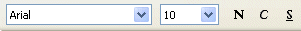

Activitats
Conceptes bàsics
L’objectiu d’aquesta activitat és conèixer els conceptes bàsics del full de càlcul del LibreOffice Calc:
- Llibre
- Full de càlcul
- Cel·la
- Etiquetes d’un full
- Barra de fórmules
- Menús
- Barra d’eines
- Edició del contingut d’una cel·la
- Rang
- Accés a l’ajuda del LibreOffice Calc
Podreu cercar, a través de l’ajuda que ofereix el programa LibreOffice Calc, informació bàsica sobre aquests i d’altres conceptes i tenir una visió genèrica de la seva utilització i potencialitats.
Accedir al programa LibreOffice Calc
Us apareixerà una pantalla similar a la que es veu a la figura següent:
El que esteu veient és un llibre de treball que conté tres fulls de càlcul (Full1, Full2 i Full3). En la part superior del full visible hi ha unes lletres. Aquestes són els noms de les columnes. A l’esquerra teniu uns nombres que ens indiquen les diferents files. En el centre teniu la quadrícula del full de càlcul. Cada casella d’aquesta quadrícula s’anomena cel·la i queda determinada per la lletra que té a sobre i el nombre que té a l’esquerra. Així, la cel·la assenyalada en la figura anterior és la B4 (columna B i fila 4). Quan una cel·la està assenyalada d’aquesta manera direm que està activada o seleccionada.
Edició de cel·les
En aquestes cel·les podreu entrar tot tipus d’informació, numèrica o no. Per fer-ho només cal que situeu la fletxa del cursor en la cel·la corresponent, premeu el botó esquerre del ratolí (així la cel·la quedarà activada) i escriviu amb el teclat el que vulgueu. Sempre heu d’acabar prement la tecla RETORN (INTRO).
- Entreu el nombre 125 a la cel·la B4.
- Entreu el nombre 2 a la cel·la C4.
- Entreu la paraula Hola a la cel·la A2.
També podeu passar d’una cel·la a una altra fent servir les tecles amb fletxes que teniu a la part inferior dreta del vostre teclat o al teclat numèric. Proveu-ho.
Fórmules
A més de nombres i paraules, també es poden introduir fórmules en les cel·les. Aquestes fórmules representen operacions que es fan amb els continguts de les cel·les indicades i el resultat d’aquestes operacions queden escrites en la mateixa cel·la. Qualsevol fórmula sempre ha de començar amb el signe =. Posem un exemple:
- Suposem que en la cel·la B4 encara hi ha el nombre 125 i en la C4 hi ha el 2. Si no és així entreu-los.
- Entreu a la cel·la D4 la fórmula =B4+C4. Per fer-ho cal que activeu la cel·la D4 i que escriviu amb el teclat =B4+C4 (no us oblideu el signe = “igual”) i acabeu amb RETORN (INTRO).
Fixeu-vos com en la cel·la D4 teniu escrit el resultat de la suma del contingut de la cel·la B4 i de la cel·la C4. Si ara torneu a la cel·la D4 podreu observar com a la barra de fórmules (part superior de la pantalla) apareix la fórmula que heu introduït, mentre que en la cel·la surt el resultat de l’operació. Aquesta fórmula serveix per a tots els valors numèrics que entreu en les cel·les B4 i C4.
- Canvieu el contingut numèric de les cel·les B4 i C4. Per fer-ho activeu la cel·la B4 i entreu amb el teclat un nombre diferent al que hi havia, prement al final RETORN (INTRO). Com podeu veure, el nombre que heu acabat d’entrar substitueix l’anterior. Feu el mateix amb C4.
- Observeu com a la D4 s’actualitza automàticament el resultat fent la suma dels nombres nous que heu entrat a B4 i C4.
- Entreu, ara, la fórmula =B4*C4 a la cel·la C5. Aquesta fórmula calcula el producte entre el contingut de B4 i el de C4 (el símbol * és el símbol de multiplicar). Canvieu el valors de B4 i C4 i observeu com les fórmules calculen.
- Entreu a D5 la fórmula =B4/C4. Aquesta fórmula calcula la divisió entre B4 i C4. Si C4 és buida o hi ha un 0, la fórmula dóna un missatge d’error, ja que no es pot dividir per zero.
- Proveu d’entrar la fórmula =B4-C4 (la resta) en una altra cel·la. Aneu canviant els valors de B4 i C4 i observeu com totes les fórmules van calculant amb els valors nous introduïts.
Rangs
Anomenem rang a un rectangle format per cel·les veïnes. Observeu la imatge següent:
El rectangle format per totes les cel·les que van des de la C3 (vèrtex superior esquerre) fins a la F7 (vèrtex inferior dret) és un rang que anomenarem com C3:F7. En total, abarca un total de 20 cel·les veïnes. Per seleccionar un rang cal situar la fletxa del cursor sobre la cel·la que serà un dels vèrtexs, prémer el botó esquerre del ratolí, i, sense deixar-lo de prémer, ampliar el rectangle fins al vèrtex que es vulgui. Proveu de seleccionar diferents rangs:
- Seleccioneu el rang A1:C3.
- Seleccioneu ara el rang B3:F3. Com podeu veure, un rang pot ser simplement una part d’una fila o d’una columna.
- Seleccioneu el rang D2:D8.
Diferents fulls d’un llibre
El que heu entrat està en el full Full1.
- Seleccioneu el full Full2. Per fer-ho, moveu el ratolí fins que la fletxa del cursor quedi a sobre de l’etiqueta que porta el nom Full2 i premeu el botó esquerre del ratolí. Com podeu observar, el que teniu ara a la vista és un altre full diferent del primer però que es guardarà junt amb els altres que formen el llibre. En definitiva, els diferents fulls són les diferents pàgines d’un mateix llibre. Torneu a Full1.
Barra de menús i d’eines
En la part superior de la pantalla trobareu la barra de menús i la barra (o les barres) d’eines amb les quals podreu accedir a les diferents accions i tractaments que us permetran dissenyar els vostres fulls de càlcul.
L’ajuda del LibreOffice Calc
Una de les primeres eines que heu de conèixer és l’ajuda del LibreOffice Calc.
La informació que dóna el LibreOffice Calc en l’ajuda és prou acurada, completa i d’interès per poder fer una recerca d’informació bàsica sobre el full de càlcul i per tenir una visió genèrica de la seva utilització i potencialitats.
L’ajuda dóna informació mitjançant quatre modes:
Primer mode: Accediu al menú Ajuda \ Ajuda del LibreOffice, que desplega una finestra de diàleg on a partir de cercar informació referida a una paraula o diverses paraules, el sistema proporciona un o diversos temes explicatius. Activeu l’opció Mostra la subfinestra de navegació si no ho està (la primera icona de l’esquerra), tal com es mostra en la figura següent:
Segon mode: prement la tecla F1 en qualsevol lloc i moment s’obre la mateixa finestra que abans.
Tercer mode: la icona ? de la barra de eines tambè obre directament la finestra d’ajuda.
Quart mode: Accedint al menú Ajuda \ Què és això?, el cursor apareix amb el símbol ? al costat, i al desplaçar-se pel full de càlcul ens va donant petites explicacions de les opcions que troba.
Cerqueu informació sobre els conceptes bàsics següents utilitzant un o l’altre mode de recerca:
- Ajuda: com es fa servir
- Fulls del llibre
- Etiquetes
- Barra de fórmules
- Barra d’eines
- Edició del contingut d’una cel·la
- Rang
A tall d’exemple, cercarem informació d’un dels elements presentat en el llistat anterior. La resta es deixa per a l’alumnat perquè faci la recerca en un o altre mode, segons el seu bon criteri.
- Feu: Ajuda \ Ajuda de LibreOffice i escriviu la paraula: Barres a la pestanya Cerca. Un dels temes que proposa el sistema és: Barres d’eines. Si obriu aquest tema obtindreu la informació buscada.
- Proveu tres de les opcions de la finestra d’Ajuda:
- Contingut
- Índex
- Cerca
Podeu fer servir l’ajuda sempre que ho creieu convenient. A més us trobareu el símbol d’interrogació cada vegada que es faci referència a una recerca a l’ajuda.
Format de cel·les i introducció de fómules I
Els objectius d’aquesta activitat són els següents:
- Anomenar fulls i llibres i desar-los.
- Entrar rètols, dades i fórmules.
- Ajustar la mida de les columnes.
- Copiar dades i fórmules.
- Intercalar files.
- Donar diferents formats a les cel·les.
El full que construireu servirà per mostrar, comparar i calcular les vendes de l’empresa OFIMAT, SA a Catalunya duran l’any 20xx, agrupades per delegacions. El resultat ha de ser semblant al que es mostra en la figura següent:
- Canvieu el nom del primer full Full1 per Vendes_Ofimat. Per fer-ho, feu clic a sobre la pestanya Full1 amb el botó dret del ratolí i seleccioneu l’opció Reanomena el full… Deseu el llibre mitjançant Fitxer \ Anomena i desa \ Nom del Fitxer: Llibre1_A1_A6. Indiqueu a la finestra corresponent la carpeta i la unitat de disc on voleu desar el llibre. Podeu veure una animació amb tot el procés aquí:
Es referirà a aquest procés quan, amb el nom genèric, es demani anomenar un llibre o un full de càlcul que és nou, o bé desar-lo amb un nom determinat. També se seguirà aquest procés quan es vulgui desar amb un altre nom un llibre ja existent.
- Entreu els rètols de la fila 1 i de la primera columna i ajusteu l’amplada de cada columna segons les necessitats. En posar el cursor sobre la línia divisòria que hi ha al capçal de les columnes, aquest canvia. Tot prement el botó esquerre del ratolí i arrossegant el cursor cap a la dreta o l’esquerra fareu que l’amplada de la columna augmenti o disminueixi. El mateix es pot fer amb les files (en aquest cas variar l’alçada).
La variació de l’alçada de la fila o l’amplada de la columna també s’hagués pogut fer mitjançant el menú Format \ Fila \ Alçada o Format \ Columna \ Amplada, respectivament, fixant l’alçada o l’amplada numèricament. Per defecte, si el contingut de la cel·la és textual ocupa la part esquerra, mentre que si és un nombre ocupa la dreta.
- Seleccioneu el rang A1:F1, accediu a Format \ Fusiona les ce·les i observeu com s’han ajuntat les cel·les de tot aquest rang. Aquesta operació també es pot fer clicant sobre el botó Fusiona les cel·les de la barra d’eines. El que fareu ara és aconseguir que el rètol quedi centrat en les cel·les ja combinades. Per fer-ho només cal clicar sobre el botó Alinea al centre horitzontalment de la barra d’eines.
- Entreu el rètol en la cel·la A2. Seleccioneu el rang A2:F2 i repetiu el procediment descrit anteriorment.
- Entreu el rètol en la cel·la B3. Seleccioneu el rang B3:D3 i repetiu el procediment. Heu de fer el mateix amb el rètol que hi ha en el rang E3:F3.
- Doneu format de negreta als rètols que ho necessitin. Podeu fer servir el botó Negreta de la barra d’eines.
- Entreu les dades del rang B4:C11. El punt de separació de milers no s’ha d’escriure i no sortirà de moment fins que no li donem el format corresponent.
- Entreu a la cel·la D5 la fórmula =B5+C5. Així calculeu el total de vendes a Barcelona ciutat. Copieu aquesta fórmula en el rang D6:D9. Per fer-ho seleccioneu la cel·la D5.Observeu que automàticament la selecció apareix ressaltada en les capçaleres de files i columnes.
- Activeu Edita \ Copia (o fent directament Control + C sobre la zona marcada).
- Seleccioneu el rang de destinació de les fórmules, és a dir, D6:D9. Sobre la regió seleccionada activeu Edita \ Enganxa (o Control + V).
- Una altra manera de copiar, més ràpida, és seleccionar la cel·la en què està la fórmula i moure el ratolí fins a situar-nos en el cantó inferior dret; aleshores el punter es transforma en una creu, tal com es mostra en la imatge següent, i ja només cal arrossegar-lo amb el ratolí sobre les cel·les on volem enganxar la fórmula.
Observeu que no només s’ha copiat el contingut de les cel·les, sinó la condició de càlcul referència d’on és origen la còpia. Així doncs, teniu que la cel·la D5 té la fórmula =B5+C5, la cel·la D6 té =B6+C6, la de D7, =B7+C7, la de D8, =B8+C8, i finalment la de D9, =B9+C9.
Fixeu-vos com s’ha adaptat la fórmula a les diferents cel·les.
- Entreu a la cel·la B11 la fórmula =SUMA(B5:B9). Ho podeu fer entrant la fórmula amb el teclat o bé fent servir el botó Suma.
- Copieu la fórmula de la cel·la B12 en el rang C11:D11. Observeu com les fórmules s’han adaptat a cada cel·la.
- Seleccioneu el rang B5:D11. Volem que tots els nombres d’aquest rang tinguin el format que es veu en la imatge següent:
- Accediu al menú Format \ Cel·les \ Nombres i seleccioneu un format monetari amb dos decimal i amb el separador dels milers. Premeu D’acord i observeu el resultat.
- En les columnes E i F calculareu percentatges. És convenient que prèviament doneu format de percentatge a les cel·les afectades. Seleccioneu el rang E5:F11. Accediu al menú Format \ Cel·les \ Nombres. A continuació trieu la categoria Percentatge i seleccioneu un format amb dos decimals. Premeu D’acord, però tingueu en compte que el resultat no es veurà fins al moment d’escriure els valors en les cel·les.
- Entreu a la cel·la E5 la fórmula =B5/D5. D’aquesta manera es calcula el tant per u d’alumnes del sector públic respecte del total. Com que la cel·la ja està formatada com a percentatge, ja no cal multiplicar per 100, com es faria habitualment per calcular el percentatge.
- Entreu a la cel·la F5 la fórmula =C5/D5. Així es calcula el percentatge del sector privat respecte al total.
- Ara copiareu aquestes dues fórmules en la resta de files.
- Deseu el llibre de treball.
Ara es vol ampliar un full de càlcul afegint o intercalant files. Observeu que en aquest full de càlcul s’ha inserit una nova fila amb les dades de Lleida, tal com es pot obsevar en la imatge següent:
- Inseriu una fila darrere de la número 8. Per fer-ho situeu-vos en la fila 8 i del menú Inserir escolliu l’opció Files. Empleneu la fila amb les dades que es mostren en la figura i copieu les fórmules que calguin. Veureu com les fórmules s’adapten de manera automàtica a la nova posició.
- Deseu el full amb les últimes modificacions.
Format de cel·les i introducció de fórmules II
Els objectius d’aquesta activitat són els següents:
- Entrar rètols, dades i fórmules.
- Ajustar la mida de les columnes.
- Donar diferents formats a les cel·les: negreta, mil·lers i decimals.
Entrada i còpia de dades
Concretament, es proposa fer un estudi comparatiu de quatre euroregions, entre elles Catalunya, on es pugui contrastar l’extensió, el nombre d’habitants, aturats, el PIB per habitant, i obtenir o determinar la densitat i el percentatge d’atur.
Les dades que es donen són les que es mostren en la figura següent:
- Trieu el full Full2 del Llibre1_A1_A6 i anomeneu-lo Euroregions. Deseu el llibre.
- Entreu els rètols de la primera fila i de la primera columna i ajusteu l’amplada de cada columna segons necessitats.
- Personalitzeu el contingut de la fila 1 en Arial 10 i negreta.
- Entreu les dades numèriques següents, que corresponen a l’extensió, els habitants, els aturats i el PIB per habitant:
| 31930 | 6361000 | 388021 | 100,4 |
| 35751 | 10475000 | 471375 | 119,6 |
| 39831 | 4288000 | 141504 | 117,7 |
| 43698 | 5645000 | 191930 | 100,8 |
Aquesta acció la podeu fer més còmoda si seleccioneu amb el ratolí totes aquestes dades i les copieu al porta-retalls teclejant Control + C, a continuació activeu el full de càlcul, i situeu el cursor a la cel·la B3 i enganxeu les dades teclejant Control + V o amb l’opció Edita \ Enganxa.
Entrada de fórmules de la densitat i del percentatge d’atur:
- Situeu-vos sobre la cel·la F3 i entreu la fórmula corresponent al quocient entre Habitants i Extensió. És a dir, la fórmula és =C3/B3.
- Situeu-vos ara sobre la cel·la G3 i entreu la fórmula corresponent al percentatge d’aturats respecte al nombre d’habitants. És a dir, la fórmula és =D3*100/C3.
- Esteneu les fórmules del punt anterior a la resta de les files. És a dir, seleccioneu el rang F3:G3, i feu la còpia. Seleccioneu ara el rang destí F4:G7. Enganxeu la còpia feta anteriorment. Una altra manera de fer-ho, potser més còmoda, és estirar el rectangle del rang seleccionat on hi ha les fórmules, aquestes es copien automàticament a la resta de les cel·les que han quedat englobades dins del rectangle seleccionat. Tingueu en compte que, per estirar el rectangle que conté les fórmules, ho heu de fer a partir del punt quadrat inferior dret que hi ha en aquest rectangle tot col·locant el punter del ratolí a sobre del punt esmentat; prement el botó esquerre del ratolí i, sense deixar de prémer, estenent el rectangle a les cel·les on es vol copiar les fórmules. En fer l’extensió de fórmules per regions que contenen files o columnes sense informació, el LibreOffice Calc considera que tenen, per defecte, el valor 0. Així, el resultat de l’operació pot ser 0 o donar error de divisió per 0 (codi: Err:503)
Observeu com, en variar les dades d’una cel·la de les columnes B, C i D, s’actualitzen automàticament la resta de les dades del full de càlcul.
Si fos el cas, busqueu informació sobre els valors erronis, indagant textualment sobre el terme error a l’ajuda de LibreOffice Calc.
- Expresseu totes les quantitats en format de milers sense cap decimal, a excepció del PIB per habitant, la densitat i el percentage d’atur, que seran amb un decimal. Ho podeu fer a partir del menú Format \ Cel·les \ Nombres, però també disposeu d’una sèrie d’icones a la barra d’eines per fer-ho d’una manera més ràpida, són les que es mostren en la figura següent:
El full de càlcul, un cop acabat, podria ser semblant a la imatge següent:
- Deseu novament el llibre amb les modificacions i actualitzacions que heu elaborat amb Fitxer \ Desa.
Successions i sèries
L’objectiu d’aquesta activitat és generar diferents tipus de successions o sèries.
Una de les possibilitats del full de càlcul del LibreOffice és poder generar diversos tipus de successions o sèries numèriques, sèries cronològiques per dies de la setmana, per dies laborables, per dies mensuals, per mesos, per anys i sèries textuals. Per fer-ho, haureu de conèixer:
- Ordenació de llistes (Menú Eines \ Opcions \ LibreOffice Calc \ Ordena les llistes).
Ara us proposem fer un full que serveixi per investigar sobre aquestes diverses sèries que genera el LibreOffice Calc. Aquest full podria ser semblant a la imatge següent:
- En primer lloc, cal reanomenar el Full3 del Llibre1_A1_A6, l’anomenareu Successions.
- Entreu el rètol Successions en la cel·la A1. Ajusteu l’amplada de les columnes aproximadament com està en la figura. Fixeu-vos com el rètol de la cel·la A1 pot envair la cel·la B1, sempre que aquesta estigui buida.
- Entreu els rètols de la fila 3 i doneu-los format segons la figura.
- El contingut previst de les deu columnes és el següent:
- A la columna A, una successió numèrica en què el primer terme és 1 i cada nombre s’obté sumant 3 a l’anterior.
- A la columna B, una successió numèrica en què el primer terme és 1 i cada nombre s’obté multiplicant per 3 l’anterior.
- A la columna C, sèrie cronològica de dies de la setmana. Data inicial Dimarts.
- A la columna D, sèrie cronològica de dies amb data inicial 01/09/09 i d’increment 1.
- A la columna E, sèrie cronològica de dies feiners amb data inicial 01/09/09 i d’increment 1.
- A la columna F, sèrie cronològica de mesos amb data inicial 01/09/09 i d’increment 1.
- A la columna G, sèrie cronològica d’anys amb data inicial 01/09/09 i d’increment 1.
- A la columna H, sèrie textual amb terminació numèrica amb primer element Carme, 10 i d’increment 1.
Per fer-ho, procediu de la manera següent:
- Activeu la cel·la que serà el primer element de la successió. Escriviu l’element inicial.
- Seleccioneu, amb el primer element de la successió inclòs, el conjunt de cel·les que compondran els diferents elements de la successió.
- Trieu l’opció Edita \ Emplena \ Sèries. S’obrirà una finestra com la que es mostra a continuació:
- Trieu el tipus de successió (Tipus de sèrie) de la finestra de diàleg. Determineu si la successió és de fila o columna (en el nostre cas, com que totes són de columnes, seleccionareu Avall).
- A continuació heu de triar el tipus de successió que voleu omplir i validar sempre amb D’acord.
Per a les lineals (columna A), trieu l’opció Lineal i Augment 3.
Per a les geomètriques (columna B), trieu l’opció Geomètrica i Augment 3.
Per a la successió de mesos i de dies de la setmana (columnes C i D) accepteu l’opció Emplenat automàtic amb Augment1. En aquest cas, és molt possible que el resultat no sigui el previst en la il·lustració inicial. Això dependrà de la configuració del LibreOffice Calc en aquest aspecte, és a dir, dependrà de si la llista que voleu està ja definida o no.
Per veure les vostres llistes i modificar-les, aneu a Eines \ Opcions \ LibreOffice Calc \ Ordena les llistes.
Si voleu introduir una nova llista personalitzada, una vegada que heu accedit a aquest menú:- Premeu l’opció Nou.
- Entreu en la finestreta Entrades una nova llista de paraules que voleu que formin una successió (per exemple, els dies de la setmana en català o en anglès, o els mesos). Cal que entre paraula i paraula premeu la tecla RETORN (INTRO).
- Premeu el botó Afegeix. En aquest moment la nova llista entrada ja s’ha incorporat a les llistes personalitzades.
- Si voleu prescindir d’alguna llista, cal seleccionar la llista corresponent i prémer el botó Suprimeix.
- Premeu D’acord i tornareu al full de càlcul.
Per a les cronològiques (columnes E, F, G), trieu l’opció Edita \ Emplena \ Sèries \ Data, Unitat de temps: Dia feiner, Mes, Any, respectivament, amb Augment 1 per a totes.
Per a la successió textual Carme, 10 (columna H) trieu l’opció Emplenat automàtic amb Augment 1.
- Observeu com s’ha anat generant cada successió. Aquestes successions, són estàtiques o dinàmiques? És a dir, en variar el primer element d’una successió, s’actualitza la resta dels elements de la successió?
- Deseu el llibre.
Interès simple. Fórmules amb referències absolutes
L’objectiu d’aquesta activitat és introduir referències absolutes en les fórmules. Entre d’altres coses, treballareu:
- Aplicació de sèries cronològiques per anys.
- Càlcul de l’interès simple.
- Fórmules amb referències absolutes.
El full de càlcul que servirà d’exemple descriurà l’evolució d’un capital invertit a interès simple durant 10 anys. El resultat podria ser similar al que es mostra en la figura següent:
Cal recordar que, quan escrivim un text en una cel·la determinada, “envairà” la cel·la del costat si és buida, encara que el text pertanyi a la cel·la inicial. Així doncs, el rètol INVERSIÓ A 10 ANYS: INTERÈS SIMPLE pertany a la cel·la A1 tot i que ha envaït les cel·les B1 i C1.
- En primer lloc, cal crear un nou full de càlcul en el Llibre1_A1_A6, ja que els tres que es creen per defecte ja els tenim ocupats. Per crear el nou full, feu el següent:
- Amb el botó dret del ratolí cliqueu sobre el nom del darrer full i seleccioneu l’opció Insereix un full.
- Escolliu el lloc Després del full actual.
- Escriviu Interes_simple al camp Nom.
- Valideu amb D’acord.
- Introduïu el rètol en negreta de la fila 1.
- Poseu a la cel·la A3 el rètol “Capital inicial:” i a la cel·la C3 la quantitat que s’invertirà (per exemple 1000). El símbol de l’euro i dels milers sortiran més endavant.
- Poseu a la cel·la A4 el rètol “Tipus d’interès:” i a la cel·la C4 el tipus previst (per exemple, 4).
- L’amplada de les columnes s’ajusta als rètols, sense una mida concreta, amb l’única condició que els rètols hi càpiguen. Per ajustar a una mida determinada es pot procedir de la manera següent: Se seleccionen les columnes que es volen modificar, totes a una mateixa amplada, es tria l’opció de la barra de menú Format \ Columna \ Amplada, es tecleja el valor de l’amplada i es valida amb el botó D’acord.
- Introduïu-hi els rètols de la fila 6 i ajusteu l’amplada de les columnes B, C i D a 2,8 cm.
- Es vol aconseguir que els rètols de la fila 6 quedin alineats a la dreta de cada cel·la. Seleccioneu el rang A6:D6, accediu a Format \ Cel·les \ Alineament i trieu l’opció Dreta del desplegable Horitzontal. Premeu D’acord.
- Entreu la referència de 10 anys, des del 2009 fins al 2018, introduint el primer any i la resta com a sèrie lineal (aritmètica) amb augment 1.
- Introduïu a la cel·la B7 la fórmula =C3, que correspon al capital inicial.
- Introduïu a la cel·la C7 la fórmula =B7*C4/100, que calcula els interessos anuals del capital disponible.
- Introduïu a la cel·la D7 la fórmula =B7+C7, que calcula el total disponible en acabar l’any.
- A continuació, l’acció esperada seria copiar les fórmules de les cel·les B7 i C7 sobre B8 i C8, respectivament. Això no obstant, us portaria cap a un resultat erroni. Per comprovar-ho, feu aquest procés d’aquesta manera incorrecta i després el corregireu.
- Esbrinem el motiu de l’error. Analitzeu el contingut de les fórmules de les cel·les B8 i C8. A la cel·la B8 trobareu la fórmula =C4, i hauria de ser =C3 (el capital inicial). A la cel·la C8 trobareu la fórmula =B8*C5/100, i hauria de ser =B8*C4/100. Fixeu-vos que C5 és una cel·la buida. Això significa que, tant la referència a C3 (capital inicial) com a C4 (tipus d’interès), han de romandre fixes.
Si voleu que en copiar una fórmula algunes referències es mantinguin fixes, aquestes han de fer-se “absolutes” mitjançant el signe 
- Copieu el contingut de les cel·les B7 i C7 (ja corregides) al rang B8:C16.
- Introduïu en D8 la fórmula =D7+C8. El capital, en acabar el 2010, serà l’obtingut al final de 2009 més els interessos de 2010.
- Copieu el resultat obtingut per al 2010 a la resta dels anys. Observeu com ara els resultats de la còpia del rang B8:C16 són correctes.
El valor situat en la cel·la D16 serà el capital obtingut al final del període.
- Escriviu el rètol “Capital final:” a la cel·la A18 i a la cel·la C18 la fórmula =D16, ambdues en negreta.
- Seleccioneu la cel·la C3 i accediu a Format \ Cel·les \ Nombres. A continuació, seleccioneu la categoria Moneda, activeu el quadret Separador de milers, seleccioneu dos decimals i premeu D’acord. D’aquesta manera heu fet que la quantitat entrada en la cel·la C3 tingui un punt que separa els milers i el símbol de l’euro. Feu el mateix al rang B7:D18.
- Varieu les dades de capital i tipus d’interès i observeu-ne els resultats.
- Deseu el llibre.
Modificació d'un full. Interès compost
L’objectiu d’aquesta activitat és modificar el full de càlcul anterior perquè descrigui l’evolució d’un capital invertit a interès compost durant 10 anys. Per fer-ho, treballareu:
- Còpia i modificació d’un full fet anteriorment.
- Treure la quadrícula per a una presentació diferent.
El resultat serà similar al que es mostra en la figura següent:
Com podeu observar, en aquest cas, la columna del capital inicial no és constant, ja que cada any s’incrementa amb el capital final de l’any anterior. Això implica que haureu de modificar algunes fórmules.
- Creeu un full nou en el Llibre1_A1_A6 i anomeneu-lo Interes_compost.
- Seleccioneu tot el full Interes_simple i copieu-lo a Interes_compost. Per fer-ho, activeu el full Interes_simple i feu clic al botó que físicament és la intersecció de la numeració de les files amb el capçal de les columnes. Observareu que tot el full passa a vídeo invers. Accediu seguidament a Edita \ Copia o Ctrl+C. A continuació trieu el full Interes_compost, seleccioneu la cel·la A1 fent tot seguit Edita \ Enganxa o Ctrl+V.
- Ajusteu l’amplada de les columnes B, C i D a 2,8 cm.
- Modifiqueu el rètol de la fila 1 canviant “SIMPLE” per “COMPOST”. Situeu el cursor a la cel·la A1. Modifiqueu a la barra de fórmules el rètol i valideu l’entrada amb RETORN.
La situació del primer any (2009) és la mateixa que en el cas anterior. Les modificacions s’hauran de realitzar a partir de 2010. El capital inicial del segon any serà el capital final del primer any. És a dir, el capital inicial de cada any correspondrà al capital final de l’any anterior.
- Feu que la cel·la B8 tingui el valor obtingut de la D7. Per fer-ho, introduïu la fórmula =D7 a la cel·la B8. La rendibilitat i el capital final s’obtenen de manera idèntica, per la qual cosa no cal realitzar modificacions.
- Modifiqueu el capital inicial per a la resta d’anys. Així doncs, copieu el contingut de la cel·la B8 sobre el rang B9:B16.
Els fulls es poden visualitzar amb o sense engraellat. Per defecte, l’engraellat sempre està activat, i això pot ser més còmode per entrar les dades i les fórmules. Estèticament, però, la presentació del full de càlcul millora sense l’engraellat. Per mostrar o ocultar l’engraellat cal accedir a Eines \ Opcions \ LibreOffice Calc, s’obrirà una finestra com la que es veu en la imatge següent:
Tot seguit trieu la pestanya Visualitza i feu clic al requadre que hi ha al costat de Línies de la graella. Quan contingui una creu, l’opció està activada, és a dir, hi ha engraellat; en cas contrari, no n’hi ha. Però, atenció, treure l’engraellat afecta tots els fulls del mateix llibre.
- Desactiveu i activeu la visió de la quadrícula.
- Seleccioneu el rang B7:D18 i premeu els botons de la barra d’eines per ajustar el nombre de decimals visibles, són els que es mostren en la imatge següent:
Aquesta és una altra manera de fixar un format numèric.
- Compareu els resultats obtinguts en el cas d’interès simple i compost.
- Canvieu el tipus d’interès en ambdós fulls i observeu-ne els resultats.
- Deseu el llibre.
Fórmules amb referències mixtes
L’objectiu d’aquesta activitat és construir una taula de multiplicar de doble entrada. Per portar-ho a terme, caldrà utilitzar adequadament les fórmules, referències absolutes i relatives. Per tant, treballareu:
- Ús de fórmules amb referències mixtes.
- Introducció de línies verticals i horitzontals.
El resultat serà semblant al que es mostra en la figura següent:
- Creeu un nou llibre i anomeneu-lo Llibre2_A7_A11.
- Seleccioneu el Full1 del llibre. Anomeneu-lo Multiplicar.
- Reduïu l’amplada de les columnes corresponents fins que siguin de 0,90 cm.
- Situeu el rètol “Taula de multiplicar” a la cel·la A1. Doneu-li els atributs Arial, grandària 18 i negreta.
- Observeu que l’alçada de la fila s’ha modificat ajustant-se a la mida del rètol que heu introduït.
- Empleneu amb la sèrie 1…10 el rang A4:A13.
- Empleneu amb la sèrie 1…10 el rang B3:K3.
- Poseu en negreta els capçals de fila (rang A4:A13) i de columna (rang B3:K3).
- Entreu a la cel·la B4 la fórmula adequada per obtenir el seu valor com a producte del contingut del capçal de la seva fila (A4) i de la seva columna (B3). En principi, la fórmula que sembla correcta és =A4*B3, però cal que aquesta fórmula pugui copiar-se sobre el rang B4:K13 de forma que el resultat mantingui el mateix criteri (fila per columna), tal com s’exemplifica en la imatge següent:
La fórmula A4*B3 no és correcta, ja que cal tenir cura de les referències absolutes i relatives necessàries. Per a A4 serà absoluta la referència a A (primera columna), ja que per obtenir qualsevol producte caldrà multiplicar sempre per la primera columna. El 4 és una referència relativa (dependrà de la fila on s’estigui).
Per a B3 serà absoluta la referència al 3 (tercera fila), perquè sempre s’haurà de multiplicar per la tercera fila i serà relativa la B (dependrà de la columna on s’estigui). La fórmula que s’ha d’introduir serà, com a conseqüència, $A4*B$3 (absolutes amb $ la primera columna i la tercera fila).
Una manera de corregir la fórmula =A4*B3, si ja l’heu entrada, és seleccionar a la barra de fórmules (a la part superior de la pantalla) els caràcters A4 i prémer, repetidament i de forma simultània, les tecles Majúscules i F4 fins que aparegui $A4. A continuació, cal fer el mateix amb els caràcters B3, sempre a la barra de fórmules. Al final, heu de prémer la tecla de retorn.
- Copieu l’esmentada fórmula sobre el rang B4:K13.
Com a punt últim, poden fer-se aspectes merament decoratius.
- Doneu un fons groc pastel al rang A1:L14.
- Dibuixeu de color vermell clar les línies verticals i horitzontals per emmarcar les cel·les amb les dades.
- Dibuixeu un marc negre envoltant el full (rang A1:L14).
- Dibuixeu la línia blanca de separació entre les files 2 i 3.
- Desactiveu, si fos necessari, la visió de la quadrícula.
- Deseu el llibre.
Podeu veure una animació amb tot el procés aquí:
Funcions Mitjana, Max i Min
L’objectiu d’aquesta activitat és conèixer l’ús del format condicional i de les funcions Mitjana, Max i Min.
Funcions Mitjana, Max i Min
S’han recollit les dades de les unitats venudes d’un producte en els sis primers dies de promoció. Interessa saber quina és la quantitat més gran d’unitats venudes de cadascun dels colors, i també la quantitat d’unitats menys venudes de cada color, la mitjana d’unitats venudes de cada color en els sis dies i la mitjana de totes les unitats venudes cada dia.
Construïu un full de càlcul adequat utilitzant la funció Mitjana que calcula la mitjana aritmètica, la funció Max que calcula el valor màxim, Min que calcula el valor mínim. A més, cada nombre d’unitats venudes ha de tenir un color diferent, segons que sigui inferior o superior a la mitjana diària de vendes. El resultat final del full ha de ser com el que es mostra a continuació:
- Seleccioneu el Full2 del Llibre2_A7_A11. Anomeneu-lo Llançament.
- Modifiqueu l’amplada de les columnes perquè la A sigui d’1,70 cm, de la B a la H d’1,40 cm i la I de 3 cm.
- Situeu el rètol “Unitats venudes de l’article Ref H-228 durant el llançament” a la cel·la A1. Doneu-li els atributs Arial, grandària 11 i negreta.
- Entreu els rètols de la fila 3 i de les cel·les A12, A13 i A14. Els atributs són Arial, grandària 10 i alineació dreta. Les cel·les I3, A12, A13 i A14 estan en negreta.
- Entreu els nom dels dies del rang A4:A9.
- Entreu les vendes registrades al rang B4:H9. Les podeu entrar directament pel teclat, o bé les podeu copiar de la finestra següent:
| 24 | 28 | 30 | 22 | 24 | 26 | 20 |
| 16 | 18 | 10 | 14 | 20 | 22 | 16 |
| 14 | 12 | 7 | 16 | 12 | 12 | 10 |
| 30 | 32 | 36 | 34 | 22 | 26 | 20 |
| 36 | 40 | 42 | 34 | 28 | 24 | 20 |
| 32 | 16 | 34 | 30 | 30 | 32 | 24 |
- Situeu les fórmules següents a les cel·les indicades:
| Cel·la | Fórmula |
|---|---|
| B12 | =MITJANA(B4:B9) |
| B13 | =MAX(B4:B9) |
| B14 | =MIN(B4:B9) |
- Copieu-les sobre el rang C12:H14.
- Fixeu sense decimals per visualitzar la mitjana d’unitats venudes del rang B12:H12.
- Entreu a la cel·la I4 la fórmula =MITJANA(B4:H4).
- Copieu-la sobre el rang I5:I9.
- Fixeu sense decimals per visualitzar la mitjana diària d’unitats venudes el rang I4:I9.
- Doneu un fons groc clar a les cel·les del rang A1:I14.
- Dibuixeu un marc negre envoltant el full (rang A1:I14).
Format condicional
A continuació, fareu que les dades registrades al rang B4:B9 estiguin escrites d’un color blau si estan per sota de la mitjana del dia i d’un color vermell si estan per sobre. Això s’aconsegueix amb el format condicional.
- En primer lloc heu de crear uns Estils de cel·la nous, que us serviran per destacar les dades inferiors a la mitjana aritmètica:
- Obriu la finestra Format \ Estils i formatació (o premeu F11).
- Amb el botó dret seleccioneu Nou.
- A la pestanya Organitzador escriviu el Nom Dades inferiors.
- A la pestanya Efectes de lletra seleccioneu el color blau clar.
- Repetiu el procés per crear un altre estil amb el nom Dades superiors i color de lletra vermell clar.
- Mireu com els nous estils de cel·la ja surten al llistat d’estils existents a la finestra. Tanqueu-la (F11).
Per aplicar el Formatatge condicional:
- Seleccioneu el rang B4:B9. Volem que en el cas de superar la mitjana d’unitats venudes diària, la font de la cel·la corresponent quedi de color vermell.
- Accediu a Format \ Formatació condicional.
- De la zona superior Condició 1 trieu menor que del desplegable central superior i entreu B$12 en la finestreta de la dreta.
- Seleccioneu a Estil de la cel·la l’estil Dades inferiors que heu definit abans.
- De la zona del mig Condició 2 trieu major que del desplegable central superior i entreu B$12 en la finestreta de la dreta.
- Seleccioneu a Estil de la cel·la l’estil Dades superiors que heu definit abans.
- Premeu D’acord i observeu com es destaquen en diferents colors les dades que estan per sota o per sobre de la mitjana aritmètica.
- Amb el rang B4:B9 seleccionat, premeu el botó Pinzell de format de la barra d’eines.
- Seleccioneu el rang C4:H9. En deixar anar el botó esquerre del ratolí, el format condicional s’haurà copiat a tot el rang de dades de color blau.
- Feu el mateix amb les dades de tots els colors.
- Canvieu algunes dades i comproveu com canvien de color.
A continuació, acabareu els detalls estètics.
- Dibuixeu la línia blanca de separació entre les files 2 i 3.
- Dibuixeu les línies verticals i horitzontals de color verd per emmarcar les cel·les amb les dades.
- Desactiveu la visió de la quadrícula.
- Deseu el llibre.
- Modifiqueu algunes de les dades referents a les unitats venudes i comproveu com varien les mitjanes, les màximes, les mínimes i els colors reflectits al full.
Funció SI i format condicional
L’objectiu d’aquesta activitat és aprendre a utilitzar una funció condicional. Amb aquesta funció, el LibreOffice Calc executa una acció segons una condició prèvia que pot complir-se o no.
Treballareu amb:
- La funció condicional Si( ; ; ).
- Format condicional amb fórmula.
- Format de cel·la personalitzat.
- Diferents opcions de formats d’alineació.
La funció condicional SI
L’exemple que us proposem per introduir aquesta novetat consisteix a elaborar una factura d’una compra en un supermercat que compta amb una sèrie de productes amb marca pròpia. L’establiment decideix aplicar un descompte especial sobre el preu d’aquests productes propis i, a més, obsequia amb portar a casa la compra d’aquell client que superi els 100 € en l’import total.
Una possible factura podria ser igual a la que es mostra a continuació:
En aquest cas, el percentatge aplicat és del 4,5% a aquells productes propis que vénen marcats a la figura amb la lletra “D”. Fixeu-vos que només en aquests productes s’ha aplicat el descompte. Al final, es pot veure que, en haver superat els 100 €, surt el rètol que indica que podrà gaudir del transport gratuït de la compra.
- Anomeneu Descomptes el Full3 del Llibre2_A7_A11.
- Modifiqueu l’amplada de les columnes perquè us quedin, aproximadament, com les de la figura.
- Entreu el rètol de la cel·la B2.
- Seleccioneu el rang B2:C2 i doneu-li l’atribut de negreta.
- Amb el mateix rang seleccionat, accediu a Format \ Cel·les \ Alineament i trieu l’opció Centre dels desplegables Horitzontal i Vertical. Activeu, també, l’opció Ajustament automàtic del text. Accepteu.
- Entreu a C2 el número 4,5 i doneu-li la grandària 10.
- Amb la cel·la seleccionada, accediu a Format \ Cel·les \ Nombres i trieu del menú Categoria l’opció Definit per l’usuari. Entreu en la casella Codi de format els caràcters #,0” %“. Amb això haureu fixat un nou tipus de format que consisteix a escriure el símbol % a continuació d’un nombre amb un decimal. Accepteu.
Si després d’haver entrat el número 4,5 haguéssiu triat el format de percentatge de Format \ Cel·les \ Nombres \ Percentatge, el número 4,5 s’hauria multiplicat per 100. En canvi, si primer doneu el format percentual a una cel·la buida i després hi entreu el número, el comportament és diferent. Davant d’aquesta situació, s’ha optat per fer servir aquest format personalitzat.
- Entreu els rètols, en negreta, de la fila 4. L’alineació de les cel·les del rang B4:B14 ha de ser centrada. I les de C4, D4 i E4 a la dreta.
- Seleccioneu el rang C5:E14 i doneu-li format de moneda amb dos decimals, accedint a Format \ Cel·les \ Nombres \ Moneda amb dues xifres decimals. Feu el mateix amb la cel·la E16.
- Entreu la lletra D a les cel·les corresponents de la columna B i els preus de C5:C14.
- Entreu a la cel·la D5 la fórmula =SI(B5=“D”;C5*C$2/100;0).
Aquesta última expressió que heu entrat és la funció condicional SI ( ; ; ). Analitzem el seu funcionament. La seva estructura és SI(condició ; acció ; acció alternativa). El Calc, en primer lloc, analitza la condició. Si aquesta és certa, executa l’acció, en cas contrari executa l’acció alternativa. En el cas del vostre exemple, la condició és B5=“D” (en aquest cas, les cometes són imprescindibles). Com que és cert, s’executarà l’acció que consisteix a calcular el descompte. Si no fos així, escriuria 0 a la cel·la (acció alternativa).
- Copieu la fórmula de D5 al rang D6:D14. Com que heu fet servir la referència absoluta C$2, en totes les cel·les apareix la fórmula amb aquesta referència. Fixeu-vos que només ha calculat el descompte a les cel·les que corresponen a productes propis, és a dir, que a la cel·la corresponent de la columna B tenen una D.
- Entreu a E5 la fórmula =C5-D5 i copieu-la al rang E6:E14.
- Escriviu a D16 el rètol “Total”, en negreta i alineat a la dreta.
- Entreu a la cel·la E16 la fórmula =SUMA(E5:E14) per calcular l’import total.
Format condicional i SI condicional
El format condicional consisteix a donar un determinat format a una cel·la en funció d’una condició. El SI condicional s’assembla una mica, ja que el seu resultat també depèn d’una condició. A continuació, els utilitzareu tots dos per aconseguir el rètol que surt a la fila 18.
- Entreu a la cel·la D18 la fórmula =SI(E16>100;”Transport gratuït”;””). En aquest cas, si el contingut de la cel·la Eg>E16 és superior a 100, s’escriurà el rètol “Transport gratuït”, en cas contrari, no escriurà res (””). Aquí heu fet servir el SI condicional.
- Ara heu de crear un Estil de cel·la nou, que us servirà per destacar el rètol “Transport gratuït” en el cas que aparegui escrit:
- Obriu la finestra Format \ Estils i formatació (o premeu F11).
- Amb el botó dret seleccioneu Nou.
- A la pestanya Organitzador, escriviu el Nom Avis ressaltat.
- A la pestanya Efectes de lletra, seleccioneu el color blanc.
- De la pestanya Vores trieu, de la columna Arranjament de línies \ Estàndard, la segona de les opcions (Posa totes quatre vores).
- De la pestanya Fons trieu el color blau marí. Accepteu i tanqueu la finestra (F11).
- Per aplicar el Formatatge condicional:
- Seleccioneu el rang D18:E18. Uniu les dues cel·les amb l’opció Format \ Fusiona les cel·les.
- Volem que si el total es major de 100 € les cel·les apareguin ressaltades amb el format anterior. Accediu a Format \ Formatació condicional.
- De la zona superior Condició 1 trieu del primer desplegable l’opció la fórmula és i, a la cel·la a la seva dreta, l’expressió =$E$16>100 (amb el signe d’igual inclòs). D’aquesta manera, sempre que el contingut d’E16 superi els 100 €, s’activarà el format que tot seguit triareu.
- Seleccioneu a Estil de la cel·la l’estil Avis ressaltat que heu definit abans.
- Amb el rang D18:E18 seleccionat, cliqueu el botó Alinea al centre horitzontalment de la barra d’eines, per tal de centrar el rètol en la selecció. Poseu el rètol en negreta.
- Deseu el llibre.
Proveu de canviar el percentatge de la cel·la C2, o bé canvieu continguts del rang B5:C14 i observeu com canvien els descomptes només a les files que tenen la lletra D i, atès el cas, com apareix i desapareix el rètol de la fila 18.
Ara acabareu amb els detalls estètics finals:
- Treieu la quadrícula del full.
- Seleccioneu el rang B2:C2, cliqueu sobre el botó Vores de la barra d’eines i, del desplegable que surt, trieu l’última opció. També podeu fer-ho des del menú Format \ Cel·les… \ Vores.
- Feu el mateix amb el rang B4:E14 i amb el rang D16:E16.
- Doneu un fons de color amb el botó Color de fons de la barra d’eines a la cel·les B2 i D16 i al rang B4:E4. També podeu fer-ho des del menú Format \ Cel·les… \ Fons.
- Deseu el llibre.
Operacions amb dades tipus data
L’objectiu d’aquesta activitat és conèixer els diferents formats de data i les operacions més comunes amb dades d’aquest tipus.
En aquesta activitat treballareu amb:
- Format de dates.
- Operacions amb dates.
- Variacions sobre el condicional SI( ; ; ).
El full que heu de dissenyar serveix per controlar el pagament de factures. Serà similar a:
- Creeu un full nou en el Llibre2_A7_A11 i anomeneu-lo Control_factures.
- Ajusteu les amplades de les columnes i de la fila 1.
- Entreu a B2 el rètol que serveix de títol.
- Doneu-li format de negreta i un tipus de lletra Arial 14. Per fer-ho, podeu fer servir els botons que teniu a la barra d’eines, a la part superior de la pantalla. El desplegable de l’esquerra serveix per triar el tipus de lletra. Amb el desplegable del centre podeu triar la mida i amb els botons de la dreta podeu fer que la lletra sigui negreta (N), cursiva (C) o subratllada (S) . Proveu diferents possibilitats. Aquestes propietats també les podeu aconseguir accedint a Format \ Cel·les i triant les corresponents opcions Tipus de lletra i Efectes de lletra .
- 
- Centreu el rètol en el rang B2:G2.
- Entreu els rètols de B4, D4 i de la fila 6. Apliqueu el format de negreta d’acord amb el model de la imatge anterior.
- Entreu les dades de B7:D11.
- Seleccioneu la cel·la D4 i feu que el rètol quedi alineat a la dreta. Ho podeu aconseguir amb un dels botons que teniu a la barra d’eines. Si premeu el botó de la dreta feu que el text quedi alineat a la dreta. Amb el del centre quedarà centrat i amb el de l’esquerra quedarà alineat a l’esquerra.
Aquest procés és equivalent a triar l’opció corresponent del menú Format \ Cel·les \ Alineament.
- Feu el mateix amb les cel·les del rang E6:F6.
- Seleccioneu la cel·la C4 i apliqueu-li format de data. Per fer-ho, accediu a Format \ Cel·les \ Nombres \ Data i trieu un dels tipus que hi apareixen. Feu el mateix amb el rang E7:F11.
- Entreu una data a C4 seguint el format que heu triat. Aquesta data hauria de ser la data del dia d’avui. Si voleu que surti automàticament cada dia que s’obri el full, cal entrar la fórmula =AVUI(). Cada vegada que s’activa el full surt la data que el rellotge de l’ordinador considera que és la del dia actual.
- Entreu diferents dates en el rang E7:E11. Aquestes dates són les d’emissió de cada factura.
- Entreu un nombre natural a E4 que indiqui el termini de venciment de les factures, per exemple si els clients paguen a 30 dies, posarem 30.
- Entreu a F7 la fórmula =SI(E7=””;””;E7+E$4). D’aquesta manera, si la cel·la E7 és buida, és a dir, si no hi hem anotat cap data inicial, deixarà buida també la F7. En cas contrari, escriurà el resultat de sumar la data inicial (E7) més els dies de termini (E4). El $ és necessari per fer la còpia posterior. Aquesta suma és una operació entre una data més un nombre natural. Per calcular-la considera el contingut d’E4 com a dies i els afegeix als dies de la data inicial. En cas que acabi el mes, comença el següent. Escriviu diferents dates inicials a E7 i observeu-ne els resultats. Canvieu també els dies d’E4.
- Copieu la fórmula anterior a la resta de la columna. Proveu de canviar dates inicials i dies de termini.
- Introduïu a G7 la fórmula =SI(C$4>=F7;””;”Pendent”). Així, si la data actual del dia (C4) és major o igual a la data final (F7), deixarà la cel·la G7 buida. En cas contrari, escriurà Pendent. Això serà així perquè la data actual sobrepassarà la data en què s’havia de fer el pagament.
- Copieu la fórmula anterior a la resta de la columna.
- Seleccioneu el rang G7:G11 i apliqueu-li format de lletres vermelles. Per fer-ho, podeu accedir a Format \ Cel·les \ Efectes de lletra i trieu, a Color del tipus de lletra, el color vermell clar. També podeu fer servir directament el desplegable Color de la lletra que trobareu a la barra d’eines.
- Acabeu els detalls estètics d’acord amb el model.
- Deseu el llibre (CTRL+S).
Operadors lògics en el condicional. Funcions I i O
L’objectiu d’aquesta activitat és conèixer els operadors logics O( ; ) i I( ; ) en el condicional.
En aquesta activitat s’insisteix en nous aspectes de l’ús de la funció condicional SI( ; ; ) i també del format condicional. Concretament, treballareu:
- Operadors lògics en els condicionals: O( ; ) i I( ; ).
- Variacions en el format condicional.
El full que elaborareu és un petit control de faltes d’assistència, justificades i injustificades. El resultat hauria de ser similar a la figura següent:
- Creeu un full nou en el Llibre2_A7_A11 i anomeneu-lo Faltes.
- Ajusteu les amplades de les columnes i de la fila 1.
- Entreu el títol del full en la cel·la B2. Feu que tingui mida 14 i negreta. Centreu-lo en el rang B2:I2.
- Entreu els rètols de les files 7 i 8 i del rang C4:C5. Apliqueu el format corresponent a les cel·les.
- Entreu les dades de la columna B.
- Entreu a les cel·les E4 i E5 els nombres 10 i 25. Aquestes quantitats representen el màxim nombre de faltes no justificades i justificades abans de prendre alguna decisió, com pot ser sol·licitar una entrevista amb el treballador. Evidentment, aquest és un cas imaginari. Si es volgués aplicar a la realitat, cada usuari l’hauria d’adaptar a la situació pròpia.
- Entreu diverses quantitats de faltes de tot tipus en el rang C9:F24.
- Entreu a G9 la fórmula =C9+E9. Aquesta fórmula suma les faltes injustificades que porta acumulades el primer treballador de la llista amb les que ha comès en el període actual de recompte. Copieu aquesta fórmula a la resta de la columna.
- Copieu també aquesta fórmula al rang H9:H24. D’aquesta manera, com que la fórmula s’haurà adaptat a una columna més a la dreta, ara calcularà la suma de les justificades acumulades més les actuals.
- Introduïu a I9 la fórmula =SI(O(G9>E$4;H9>E$5);”Entrevista”;””).
En aquest condicional apareix per primer cop un operador lògic. Expliquem primer el significat de O(G9>E$4;H9>E$5). Dintre del parèntesi hi ha dues expressions separades per ;. L’operador O( ; ) ens indica que, tant si es compleix que G9 sigui més gran que E4 com si es compleix que H9 sigui més gran que E5, considerarem que és certa la primera condició del condicional i, per tant, escriurà el rètol Entrevista. Només en el cas que les dues expressions siguin falses, deixarà la cel·la buida. En el nostre cas significa que si supera el nombre màxim de faltes, siguin injustificades o justificades, caldrà pensar en sol·licitar una entrevista amb els treballadors.
Si en comptes de fer servir O( ; ) s’utilitza I( ; ), s’exigeix que es compleixin les dues expressions de dintre del parèntesi per donar per certa la condició. En aquest cas, només que falli una de les dues, es considera que la condició és falsa.
- Copieu la fórmula anterior a la resta de la columna.
A continuació fareu que surti un color diferent segons s’hagin superat les faltes justificades o les injustificades, amb Estils de cel·la i Formatació condicional.
- En primer lloc heu de crear uns Estils de cel·la nous, que us serviran per destacar les faltes excessives:
- Obriu la finestra Format \ Estils i formatació (o premeu F11).
- Amb el botó dret seleccioneu Nou.
- A la pestanya Organitzador, escriviu el Nom Fons vermell.
- A la pestanya Fons, seleccioneu el color vermell.
- Repetiu el procés per crear un altre estil amb el nom Fons groc.
- Mireu com els nous estils de cel·la ja surten al llistat d’estils existents a la finestra. Tanqueu-la (F11).
- Per aplicar el Formatatge condicional:
- Seleccioneu el rang G9:G24. Volem que en cas de superar el màxim de faltes injustificades, els fons de la cel·la corresponent quedi de color vermell.
- Accediu a Format \ Formatació condicional.
- Trieu major que del desplegable central superior i entreu $E$4 en la finestreta de la dreta.
- Seleccioneu a Estil de la cel·la l’estil Fons vermell que heu definit abans.
- Premeu D’acord i observeu com es destaquen les faltes que superen el valor establert a $E$4.
- Feu el mateix amb el rang H9:H24, però triant un color groc amb l’estil Fons groc i fent la comparació amb $E$5.
- Acabeu els detalls estètics d’acord amb el model de la imatge anterior.
- Deseu el llibre (CTRL+S).
Gràfics circulars
L’objectiu d’aquesta activitat és representar gràficament unes dades fent servir els gràfics circulars del LibreOffice Calc.
En aquest cas, representareu les dades de les vendes de l’empresa OFIMAT, S.A.
Us hauria de quedar semblant a la figura següent:
Consideracions prèvies
En aquesta activitat podreu construir gràfics a partir de fulls de càlcul. En el full de càlcul del LibreOffice, els gràfics es poden fer a partir del menú Insereix \ Diagrama. També podeu fer servir el botó Diagrama que trobareu a la barra d’eines.
Construcció de la taula
- Creeu un llibre de treball nou. Deseu-lo amb el nom de Llibre3_A12_A15.
- Anomeneu el primer full del llibre Gràfic_Ofimat.
- Obriu el Llibre1_A6_A11. Seleccioneu les dades del full Vendes_Ofimat i copieu-les en el full Gràfic_Ofimat del Llibre3_A12_A15.
Construcció del gràfic del sector públic
Voleu representar gràficament, mitjançant un gràfic circular, les dades de vendes del sector públic. Seguiu les etapes següents:
- Seleccioneu el rang A4:B10.
- Premeu el botó Diagrama que trobareu a la barra d’eines. En aquest moment començaran a sortir les diferents finestres que ajuden a representar el gràfic. Són les finestres que permeten formatar el diagrama automàticament.
- En la primera finestra, trieu el tipus de Diagrama de sectors, tal com es mostra a continuació:
- Premeu Següent.
- En la segona finestra d’ajuda, assegureu-vos que estiguin seleccionades les opcions La primera fila com a etiqueta i La primera columna com a etiqueta, tal com es mostra en la figura següent:
- Premeu Següent.
- En la tercera finestra comproveu que les sèries de dades són correctes. Fixeu-vos en la figura següent:
- Premeu Següent.
- En la quarta finestra, entreu el títol Vendes sector públic. Assegureu-vos que està activada l’opció Mostra la llegenda, tal com es pot observar en la figura següent:
- Premeu Finalitza.
És clar que el gràfic que ha sortit encara es pot millorar. Sempre que vulgueu fer modificacions d’un gràfic, s’ha de veure amb la seva vora seleccionada de color gris, tal com es mostra en la imatge següent:
Si no és així, haureu de fer un doble clic sobre el gràfic. Comproveu-ho:
- Seleccioneu una cel·la qualsevol de full. El gràfic ja no està seleccionat.
- Cliqueu un sol cop sobre el gràfic. Aquest està seleccionat però no mostra la seva vora gris. No hi podeu fer canvis importants.
- Feu un doble clic sobre el gràfic. Ha quedat seleccionat amb la vora grisa. D’aquesta manera, podeu fer les modificacions pertinents.
Si el gràfic està seleccionat amb la vora grisa visible (doble clic) i moveu el cursor lentament amb el ratolí sobre les diferents parts del gràfic, veureu com van sortint, en finestretes de fons groc, els noms d’aquestes parts: Títol principal (és el títol), Àrea del diagrama (és el fons de la finestra gràfica) i Llegenda (en aquest cas, és la zona on hi ha els noms de les províncies i comarques). Cadascuna d’aquestes parts és independent i pot ser modificada fent servir uns menús que surten en prémer el botó dret del ratolí, havent-les seleccionat prèviament. A continuació veureu els canvis que, en aquest cas, podeu fer:
Per canviar la mida del títol:
- Seleccioneu el Títol principal situant la fletxa del cursor a sobre i prement el botó esquerre del ratolí. Veureu que el títol ha quedat seleccionat.
- Sense moure el cursor, premeu el botó dret del ratolí i apareixerà una finestra de menú. Trieu l’opció Propietats de l’objecte.
- D’aquesta finestra nova que surt, podeu triar les diferents característiques del títol. En aquest cas, trieu de la fitxa Caràcters la mida 12 i l’estil Negreta, tal com podeu observar en la figura següent:
- Premeu D’acord.
Per canviar el format de la llegenda:
- Seleccioneu de la mateixa manera la llegenda. Amb el botó dret del ratolí accediu a Propietats de l’objecte.
- De la finestra nova trieu Caràcters \ Mida 8 i Vores \ Estil \ Invisible. Premeu D’acord.
Per incloure i modificar el format de les dades percentuals i el color dels trossos:
- Cliqueu a sobre del gràfic circular, o molt a prop d’ell, de manera que quedi seleccionat tot, no una part.
- Accediu al menú Insereix i trieu l’opció Etiquetes de dades. De la finestra que ha sortit trieu Mostra valor \ com a percentatge. Fixeu-vos en la figura següent:
- Seleccionant cadascuna de les parts del diagrama, podeu accedir a canviar la mida de l’etiqueta i el color del troç. Com és habitual, una vegada seleccionada la part del diagrama, haureu d’accedir amb el botó dret del ratolí a Propietats de l’objecte i a les fitxes Caràcters i Àrea per fer les modificacions que creieu oportunes. Premeu D’acord.
Per canviar el color del fons:
- Cliqueu amb el botó dret del ratolí a l’interior de la finestra gràfica i trieu l’opció Àrea del diagrama. De la fitxa Àrea, trieu un color. Premeu D’acord.
Per fer una vora:
- Cliqueu amb el botó dret del ratolí a l’interior de la finestra gràfica i trieu l’opció Àrea del diagrama. De la fitxa Línies trieu un estil i un color. Premeu D’acord.
Construcció del gràfic del sector privat
El procediment serà similar a l’explicat en l’apartat anterior. Només cal tenir present que la selecció inicial es diferent:
- Seleccioneu el rang A4:A10.
- Premeu la tecla de control i, sense deixar-ho de fer, seleccioneu amb el ratolí el rang C4:C10. Heu fet una selecció múltiple de rangs. A continuació, ja podeu accedir al menú Insereix \ Diagrama o prémer el botó d’assistent dels gràfics i seguir les indicacions de l’apartat anterior.
- Deseu el llibre.
Fixeu-vos com queden els dos gràfics i la informació que us donen.
Recordeu que si voleu que la quadrícula del full no es vegi, heu d’anar a Eines \ Opcions \ LibreOffice Calc \ Visualitza i heu de desactivar Línies de la graella.
Podeu provar, vosaltres mateixos, d’altres subtipus de gràfics circulars.
Gràfics de barres
L’objectiu d’aquesta activitat és conèixer les possibilitats de representació i de configuració dels gràfics de barres.
En aquesta activitat representareu unes dades fent servir els gràfics de barres. A més, veureu com es poden introduir fórmules d’una manera més simplificada, utilitzant el ratolí. Practicareu:
- Gràfics de barres. Diferents subtipus.
- Introducció de fórmules utilitzant el ratolí.
- Cel·les combinades.
Consideracions prèvies
Per acabar els detalls d’un gràfic sempre s’han de fer modificacions, seleccionant-ne parts i accedint, la majoria de vegades, prement el botó dret del ratolí, al menú Propietats de l’objecte. En aquesta activitat volem subratllar la metodologia aconsellable per poder millorar els detalls de cada gràfic i saber seleccionar exactament la part específica que es vol canviar. Les etapes són les següents:
- Activar el gràfic amb un doble clic, comprovant que apareix una vora grisa.
- Fer un recorregut amb el punter per cadascuna de les parts del gràfic, sense prémer cap botó del ratolí i observant els diferents rètols amb fons groc que van sortint. Cadascun d’aquests rètols ens indiquen la part del gràfic que, si premem el botó esquerre del ratolí, podem seleccionar per fer els canvis.
- Clicar amb el botó esquerre del ratolí quan veiem que apareix el rètol corresponent a la part del gràfic que volem modificar. D’aquesta manera, aquesta part quedarà seleccionada.
- La majoria de vegades caldrà, a continuació, prémer el botó dret del ratolí per accedir al menú contextual d’aquesta part del gràfic.
Elaboració de la taula
A partir de les dades d’ocupació per sectors i províncies, hem elaborat la taula següent:
Podeu observar els milers de persones ocupades a cada província, classificades per sector d’ocupació. Us proposem fer diverses representacions gràfiques d’aquestes dades.
- Anomeneu un altre full del Llibre3_A12_A15 com a Població_ocupada.
- Apliqueu a les files i les columnes unes mides semblants a les que es mostren en la imatge anterior.
- Seleccioneu el rang B2:H2, accediu a Format i activeu l’opció Fusiona les cel·les. D’aquesta manera, el rang seleccionat es comporta com una sola cel·la.
- Amb la mateixa selecció, accediu a Format \ Cel·les \ Alineament i trieu Centre als apartats Horitzontal i Vertical. D’aquesta manera, quedarà totalment centrat. Accepteu.
- Entreu-hi el títol de la taula i feu que es vegi en negreta.
- Entreu-hi els rètols del rang B3:B10. Feu que quedin en cursiva i en negreta.
- Seleccioneu el rang C3:G3, accediu a Format i activeu l’opció Fusiona cel·les. Com heu fet abans, el rang seleccionat es comporta com una sola cel·la. Entreu-hi el rètol “Catalunya”. Feu que quedi centrat i en negreta.
- Entreu-hi els rètols d’H3 i del rang C4:H4. Feu que quedin en negreta i alineats a la dreta.
- Entreu-hi les dades numèriques dels rangs C5:F8 i H5:H8.
A la cel·la C10, hi anirà la fórmula =SUMA(C5:C8), però per introduir-la, fareu servir el ratolí per assignar més fàcilment les cel·les que hi intervenen:
- Escriviu a la cel·la C10 =SUMA(.
- A continuació, sense prémer Retorn, seleccioneu el rang C5:C8. Observeu com s’ha escrit, automàticament, aquest rang a la fórmula.
- Premeu Retorn i veureu com ja s’ha escrit correctament tota la fórmula. Aquest mètode el podeu fer servir per assignar cel·les o rangs de qualsevol fórmula.
- Copieu la fórmula de C10 sobre el rang D10:H10.
- Entreu a G5 la fórmula =SUMA(C5:F5) i copieu-la sobre el rang G6:G8.
Encara, una altra manera de fer-ho:
- Seleccioneu la cel·la C10.
- Cliqueu la icona f(x) de la part superior de la pantalla.
- Trieu la funció Suma. Premeu Següent.
- Cliqueu sobre el botó que hi ha a la dreta del requadre de nombre1.
- Seleccioneu el rang C5:C8. Torneu a prémer el mateix botó.
- Premeu D’acord.
A continuació, acabeu els detalls estètics:
- Seleccioneu el rang B2:H8 i cliqueu sobre el botó Vores; del desplegable que en surt, trieu l’última opció (totes les vores).
- Feu el mateix amb el rang B10:H10.
- Apliqueu un fons de color violeta clar.
- Deseu el llibre.
Gràfic de barres verticals de valors absoluts
Amb les dades de la mateixa taula representareu, en un gràfic de barres com el següent, el nombre total de població ocupada a Catalunya per sectors:
- Seleccioneu el rang B4:B8. Premeu la tecla de control i, sense deixar de prémer-la, seleccioneu també el rang G4:G8. Heu fet una selecció múltiple.
- Activeu el menú Insereix \ Diagrama, o bé cliqueu sobre el botó Diagrama que trobareu a la barra d’eines.
- En la primera finestra, trieu el tipus de gràfic Columna, subtipus Normal (primer de la primera fila). Premeu Següent.
- En la segona finestra, trieu Sèries de dades en les columnes i assegureu-vos que estiguin activades les opcions Primera fila com a etiquetes i Primera columna com a etiquetes. Premeu Següent.
- En la tercera finestra premeu Següent.
- En la quarta i última finestra, incorporeu el títol del gràfic i premeu Finalitza.
A continuació, modificareu el gràfic que ha sortit fins a arribar al de la figura anterior.
- Seleccioneu el gràfic amb un doble clic.
Per eliminar la llegenda:
- Cliqueu sobre la llegenda (a la dreta del gràfic) i esborreu-la amb la tecla Suprimir.
Per modificar l’Àrea del diagrama i les línies horitzontals:
- Cliqueu a l’interior del gràfic i, amb el botó dret del ratolí, accediu a l’opció Àrea del diagrama. A la fitxa Àrea, trieu un color de fons. Premeu D’acord.
- Cliqueu a l’interior del gràfic, a prop de les barres, de manera que aparegui el rètol Diagrama. Premeu el botó dret del ratolí i accediu a Propietats de l’objecte. A la fitxa Àrea, trieu el color blanc. A la fitxa Vores, trieu Estil continu. Premeu D’acord.
- Cliqueu sobre una de les línies horitzontals. Sortirà el rètol Eix Y de graella principal. Amb aquestes línies seleccionades, premeu el botó dret del ratolí i accediu a Propietats de l’objecte. Trieu algun dels estils de línia discontínua i accepteu.
Per entrar i modificar els títols i per dibuixar una vora:
- Amb el gràfic seleccionat amb doble clic accediu a Insereix \ Títol. Entreu els títols dels eixos. Premeu D’acord.
- Seleccioneu el títol principal i, amb el botó dret, trieu Propietats de l’objecte. Feu que el rètol tingui una mida 10 i estil negreta.
- Seleccioneu el rètol de l’eix vertical i, amb el botó dret, trieu Propietats de l’objecte. Feu que el rètol tingui una mida 7 i estil normal.
Per canviar el color de les barres:
- Cliqueu sobre una de les barres i totes quedaran seleccionades. Amb el botó dret del ratolí accediu a Propietats de l’objecte i, de l’Àrea, trieu el color blau clar. Accepteu.
Per situar el gràfic:
- Situeu la finestra gràfica, aproximadament, sobre el rang J2:N17.
- Deseu el llibre.
És convenient que experimenteu, pel vostre compte, les diferents possibilitats que heu deixat de banda en els diferents menús que han anant sortint prement el botó dret del ratolí sobre diferents parts de la finestra gràfica.
Gràfic de barres verticals per sectors
A continuació veureu un subtipus diferent de gràfic de barres en el qual podreu comparar el nombre de persones ocupades en cada sector, classificades per províncies. En el procediment que practicareu, hi haurà força accions que ja heu fet en la secció anterior.
El resultat hauria de ser semblant a:
- Seleccioneu el rang B4:F8 i accediu a Insereix \ Diagrama, o bé cliqueu sobre el botó Diagrama de la barra d’eines.
- Trieu les mateixes opcions que abans i acabeu amb Finalitza.
El gràfic que ha sortit i que encara s’ha de modificar és diferent del de la secció anterior. Observeu que hi ha barres de dos colors diferents que representen la població ocupada de cada província. Feu-ne les modificacions pertinents:
- Cliqueu a l’interior del gràfic i, amb el botó dret del ratolí, accediu a l’opció Diagrama. En la fitxa Àrea, trieu un color de fons i modifiqueu la fitxa Vores. Premeu D’acord.
- Cliqueu a l’interior del gràfic, a prop de les barres, de manera que aparegui el rètol Diagrama. Premeu el botó dret del ratolí i accediu a Propietats de l’objecte. En la fitxa Àrea, trieu el color blanc. En la fitxa Vores, trieu Estil continu. Premeu D’acord.
- Seleccioneu les línies horitzontals i convertiu-les en línies discontínues.
- Si no heu incorporat els títols en el moment de crear el gràfic, amb el gràfic seleccionat amb doble clic, accediu a Insereix \ Títol. Entreu el títol del gràfic i el de l’eix vertical.
- Seleccioneu el títol del gràfic i feu que tingui mida 10 i estil negreta. Modifiqueu la lletra de la resta d’elements per tal que tinguin mida 8 i estil normal.
- Seleccioneu la llegenda (a la dreta del gràfic) i premeu el botó dret del ratolí per accedir a Propietats de l’objecte.
- En la fitxa Vores, trieu l’estil Invisible.
- En la fitxa Caràcters, trieu una mida igual a 8.
- En la fitxa Posició, trieu l’opció Part inferior. Premeu D’acord.
- Seleccioneu un altre cop l’Àrea del diagrama i canvieu les mides d’aquesta zona per millorar-ne la presentació.
- Seleccioneu l’eix vertical i, amb el botó dret del ratolí, accediu a Propietats de l’objecte \ Escala. Desactiveu l’automàtic de l’apartat Interval principal i entreu 100 a la casella corresponent. D’aquesta manera, heu fixat els intervals de la graduació de l’eix vertical. Encara sense acceptar, aneu a la fitxa Caràcters i canvieu la mida de les lletres al vostre gust. Premeu D’acord.
- Seleccioneu l’altre eix i canvieu també la mida de la lletra dels rètols.
- Acabeu els altres detalls estètics.
- Deseu el llibre.
Valors al gràfic
Una altra manera de presentar un gràfic és incorporar els valors que esteu representant al mateix gràfic. Si ho feu, us quedarà així:
- Seleccioneu el rectangle central blanc (Pla lateral del diagrama) i, amb el botó dret, accediu a Propietats de l’objecte. En la fitxa Àrea, trieu l’opció Cap.
- Feu el mateix al desplegable Estil de la fitxa Vores. Premeu D’acord. D’aquesta manera haurà quedat tot el fons del gràfic del mateix color.
- Cliqueu al centre d’una de les barres blaves i quedaran totes seleccionades. Amb el botó dret del ratolí accediu a Propietats de l’objecte \ Etiquetes de les dades. Trieu l’opció Mostra el valor com a nombre. En la fitxa Caràcters, trieu una mida igual 7.
- Feu el mateix amb la resta de barres.
- Deseu el llibre.
Gràfic de barres horitzontals percentuals
No podeu analitzar aquí totes les possibilitats dels diferents menús. És molt convenient que aneu fent proves i experimenteu amb diferents presentacions dels gràfics de barres. De totes les diferents possibilitats que hi ha, se n’ha seleccionat una que us exposem tot seguit.
Aquest gràfic compara percentualment la població ocupada en cada sector a les diferents províncies. Per fer aquesta representació gràfica no partireu de zero sinó que aprofitareu part de la presentació de la secció anterior.
- Seleccioneu la finestra del gràfic. Premeu el botó dret del ratolí i trieu Copia.
- Seleccioneu una cel·la no ocupada del full, premeu el botó dret i trieu Enganxa.
Amb aquestes accions heu fet una còpia del gràfic. A continuació, modificareu aquesta còpia fins a arribar al vostre objectiu.
- Feu doble clic per seleccionar la còpia de la finestra gràfica.
- Seleccioneu el títol de l’eix vertical i suprimiu-lo. Feu el mateix amb el títol de l’eix horitzontal.
- Amb la finestra seleccionada, premeu el botó dret del ratolí i accediu a Tipus de diagrama. Trieu, ara, el tipus anomenat Barra que representa l’opció de barres horitzontals. El subtipus ha de ser Percentatge apilat, que és el tercer de la fila. Premeu D’acord.
- Premeu de nou el botó dret del ratolí i accediu a Intervals de dades. Trieu, ara, l’opció Sèries de dades en les files. Premeu D’acord.
- Seleccioneu l’eix horitzontal i premeu el botó dret del ratolí. Accediu a Propietats de l’objecte \ Escala. Desactiveu l’automàtic de l’apartat Màxim i entreu 100% a la casella corresponent. Feu el mateix en l’apartat Interval principal i entreu-hi el valor 10%.
- Seleccioneu l’eix vertical i premeu el botó dret del ratolí. Accediu a Propietats de l’objecte. Feu proves amb les opcions de la fitxa Etiqueta, així com amb diferents mides per als rètols (fitxa Caràcters).
- Situeu el nou gràfic en un lloc adient del full. Observeu la informació que us dóna.
- Deseu el llibre.
Haureu notat que si canvieu la mida d’una finestra gràfica, també canvia la mida de la lletra dels rètols que conté. Si voleu que els rètols tinguin una lletra amb una mida concreta, haureu de fixar-la després d’haver dimensionat de manera definitiva la finestra gràfica.
Gràfics de línies
L’objectiu d’aquesta activitat és conèixer els gràfics de línies. S’utilitzen, principalment, per representar gràficament l’evolució d’uns valors al llarg del temps (sèries temporals).
Consideracions prèvies
A continuació podeu veure el resultat final de l’activitat:
Aquest gràfic representa l’evolució de les mitjanes de les despeses d’una empresa en formació dels treballadors segons si l’ha feta personal de l’empresa o persones externes a l’empresa. Es disposa de dades des del gener fins al maig.
Elaboració de la taula
- Seleccioneu un nou full del Llibre3_A12_A15. Anomeneu-lo Formació_treballadors.
- Modifiqueu les mides de les columnes i de la fila 1 seguint la pauta de la figura anterior.
- Entreu a B3 el títol “Formació interna”. Ha de quedar en negreta i amb el tipus de lletra Arial 12.
- Entreu els rètols i les dades del rang C2:G4. Fixeu-vos que els rètols van en negreta i en l’alineació de les dades.
- Seleccioneu B3:B4 i poseu les vores que es veuen. Feu el mateix amb C2:G4.
- Apliqueu color al fons del rang A1:H17.
- Deseu el llibre.
Gràfic de línies
- Seleccioneu el rang B2:G4.
- Activeu el menú Insereix \ Diagrama, o bé cliqueu sobre el botó Diagrama que trobareu a la barra d’eines.
- En la primera finestra, trieu el tipus de gràfic Línies, subtipus punts i línies. Premeu Següent.
- En la segona finestra que surt, assegureu-vos que estiguin activades les opcions Sèrie de dades en fila, La primera fila com a etiqueta i La primera columna com a etiqueta. Premeu Següent.
- En la tercera finestra premeu Següent.
- En la quarta finestra poseu el títol Despesa en formació. Activeu Mostra la llegenda i Part inferior. Premeu Finalitza.
Haurà sortit un gràfic que encara cal modificar.
- Per començar, arrossegueu-lo i dimensioneu-lo fins que ocupi, aproximadament, el rang B5:G16.
- Assegureu-vos que el gràfic està seleccionat amb la vora grisa, com és habitual. Recordeu que en cas contrari ho aconseguireu fent-hi un doble clic.
A continuació, fareu unes millores estètiques.
- Apliqueu al pla lateral del diagrama un degradat marró/groc lineal. Per fer-ho premeu el botó dret del ratolí amb el pla lateral seleccionat. Obriu les propietats de l’objecte i en la fitxa Àrea escolliu degradat.
- Canvieu el color de les línies.
- Apliqueu al full un color groc pastel.
- Si voleu treure la quadricula de tot el full, accediu a Eines \ Opcions \ LibreOffice Calc \ Visualitza i desactiveu Línies de graella.
- Modifiqueu algunes dades del full i observeu com canvia el gràfic.
- Deseu el llibre.
Diagrama XY
L’objectiu d’aquesta activitat és conèixer els Diagrames XY. També coneixereu la manera de millorar la presentació dels gràfics.
Quan els valors que han d’anar a l’eix horitzontal són numèrics i es vol representar un gràfic de línies, és millor fer servir els gràfics anomenats Diagrama XY. Aquest tipus de gràfics permeten dominar millor l’escala de l’eix horitzontal.
Consideracions prèvies
Es proposa, en aquesta activitat, comparar dues tarifes telefòniques diferents. La primera manté un preu fix de 0,12 € durant els 3 primers minuts de comunicació, per passar a valer 0,03 € per cada minut més. La segona tarifa manté el mínim de 0,08 € durant els primers 5 minuts, i després costa 0,06 € per cada minut addicional. Per tant, caldrà crear un full de càlcul per a l’obtenció dels resultats numèrics i un gràfic connectat al full per establir una comparació més clara. El resultat pot ser semblant a la figura següent:
Construcció de la taula
- Inseriu un nou full en el Llibre3_A12_A15. Anomeneu-lo Tarifes.
- Modifiqueu l’amplada de les columnes.
- Introduïu els rètols de la fila 2 i 6. Entreu els rètols de les cel·les B3 i B4. Alineeu-los a la dreta.
- Entreu les dades numèriques al rang C3:D4.
- Entreu la successió de minuts 0,1…14 al rang B7:B21.
- Introduïu la fórmula =C$3 a la cel·la C7. Copieu-la a les cel·les C8, C9 i C10.
- Introduïu la fórmula =C$3+C$4*(B11-3) a la cel·la C11. D’aquesta manera es multiplica el preu de cada minut (cel·la C4) pel nombre de minuts - 3, ja que els tres primers no conten, i se li suma la quota inicial (cel·la B3). Copieu-la sobre el rang C12:C21.
- Introduïu la fórmula =D$3 a la cel·la D7. Copieu-la sobre el rang D8:D12.
- Introduïu la fórmula =D$3+D$4*(B13-5) a la cel·la D13. Copieu-la sobre el rang D14:D21.
- Apliqueu un fons de color verd pastel al rang A1:I24 i traieu la quadrícula del full, si la teniu activada.
- Apliqueu format monetari amb dos decimals a les cel·les dels rangs C3:D4 i C7:D21.
- Seleccioneu B3:B4 i poseu les vores que s’hi veuen. Feu el mateix amb C2:D4 i amb B6:D21.
Construcció del gràfic
- Seleccioneu el rang B2:D2. Premeu la tecla Control i, sense deixar-la anar, seleccioneu també el rang B7:D21. D’aquesta manera heu seleccionat dos rangs no contigus del full.
- Premeu el botó Diagrama que trobareu a la barra d’eines, o bé activeu el menú Insereix \ Diagrama. El gràfic haurà d’ocupar, aproximadament, el rang E2:I21.
- En la primera finestra, trieu el tipus de gràfic XY(dispersió), subtipus Només línies. Premeu Següent.
- En la segona finestra de l’assistent, assegureu-vos que només estiguin seleccionades les opcions Sèries de dades en les columnes i Primera fila com a etiqueta. Premeu Següent.
- En la tercera finestra premeu Següent.
- En la quarta finestra, assegureu-vos que està activada l’opció Mostra la llegenda. Activeu també Eix X i Eix Y i entreu els títols Minuts i Euros, respectivament. Premeu Finalitza.
A continuació, fareu les modificacions pertinents per millorar el seu aspecte.
Per canviar el color de les línies del gràfic:
- Seleccioneu una línia i, amb el botó dret del ratolí, accediu a Propietats de l’objecte \ Línia i trieu un color. Premeu D’acord.
- Feu el mateix amb l’altra.
Per fer desaparèixer el rectangle gris de l’interior del gràfic:
- Feu clic a l’interior del gràfic fins que quedi seleccionat el rectangle gris (Pla lateral).
- Amb el botó dret del ratolí accediu a Propietats de l’objecte.
- Trieu el color blanc de la fitxa Àrea. Accepteu.
Per canviar l’aspecte de la quadrícula:
- Seleccioneu una de les línies verticals. Sortirà el rètol Graella principal (X) en un fons groc. Fent servir el botó dret del ratolí accediu a l’opció Propietats de l’objecte. Del desplegable Estil, trieu una línia discontínua. Del desplegable Color, trieu un color gris clar. Premeu D’acord.
- Repetiu el procediment anterior per a les línies horitzontals.
Canvieu l’escala dels eixos:
- Seleccioneu l’eix horitzontal i, amb el botó dret del ratolí, accediu a Propietats de l’objecte \ Escala.
- Desactiveu l’automàtic de l’interval principal i entreu-hi el nombre 1. Premeu D’acord.
- Feu el mateix amb l’altra eix fent que el valor mínim sigui 0, el màxim 0,7 i l’interval principal 0,1.
Per modificar la situació de la llegenda:
- Feu clic a la llegenda del gràfic fins que quedi seleccionada la seva vora.
- Amb el botó dret del ratolí accediu a Propietats de l’objecte \ Posició \ Part inferior.
- Encara sense acceptar, accediu a la fitxa Àrea i trieu Cap.
- De la fitxa Vores, trieu l’estil Invisible. Premeu D’acord.
Per fer una vora al gràfic:
- Cliqueu a l’interior del gràfic i, amb el botó dret del ratolí, accediu a Àrea del diagrama \ Vores i trieu un estil i un color per a la vora. Premeu D’acord.
Amb aquest gràfic podeu observar a partir de quants minuts és més econòmica una tarifa o una altra. Varieu les dades del rang B3:C4 i comproveu les variacions del gràfic.
- Deseu el llibre.
Consulta de dades
Els objectius d’aquesta activitat són els següents:
- Utilitzar les funcions CONSULTAV i CONSULTAH per a la consulta de taules.
- Utilitzar el paràmetre FALS() en la funció CONSULTAV.
- Validar dades: llista.
Consideracions prèvies
En aquesta activitat voleu conèixer, per una data determinada del calendari, quants dies de l’any han transcorregut.
El full de càlcul a realitzar serà:

La principal novetat d’aquesta activitat és la utilització de la funció CONSULTAV. Aquesta funció, juntament amb CONSULTAH i CONSULTA, serveixen per consultar taules.
Cerqueu informació sobre les funcions CONSULTAV, CONSULTAH, CONSULTA a l’Ajuda del programa.
Consulta de dades ordenades
- Creeu un llibre de treball nou, deseu-lo amb el nom de dies i anomeneu el primer full amb el nom Taules.
- Seguidament introduïu-hi les dades del rang A3:D7:

- En la cel·la A9 introduïu la fórmula =CONSULTAV(7;A3:D7;2) i observeu com el resultat serà 28.
Vegeu per què és així. En executar-se la fórmula, va a buscar el primer element del parèntesi (7) en la primera columna (A) del rang especificat (A3:D7), i, quan el troba, es desplaça fins a la columna indicada pel tercer argument del parèntesi (2). En desplaçar-se a la segona columna cap a la dreta, es troba amb el 28, i aquest és el resultat. Si en comptes de ser un 2, el tercer argument hagués estat un 3, el resultat, aleshores, hagués estat 13.
- Substituïu la fórmula de la cel·la A9 per cada una de les que hi ha a continuació, i aneu observant el resultat:
| Fórmula | Resultat |
| CONSULTAV(6;A3:D7;2) | 17 |
| CONSULTAV(6;A3:D7;3) | 32 |
| CONSULTAV(15;A3:D7;2) | 1 |
| CONSULTAV(8;A3:D7;4) | 15 |
| CONSULTAV(13;A3:D7;3) | 17 |
Com podeu veure, en els dos darrers casos, si no troba el valor demanat (8 i 13) considera el valor immediatament inferior trobat en la primera columna del rang especificat (7 i 9).
Es pot dir que CONSULTAV busca en la primera columna d’una matriu i es desplaça a través de la fila per retornar el valor d’una cel·la. S’ha de tenir en compte que els valors de la primera columna han d’estar ordenats.
La funció CONSULTAH tindrà una aplicació similar, però fent la primera recerca en horitzontal.
- Ara torneu a substituir la fórmula de la cel·la A9 per cada una de les que hi ha a continuació, i aneu observant el resultat:
| Fórmula | Resultat |
| CONSULTAH(5;A3:D7;2) | 6 |
| CONSULTAH(15;A3:D7;2) | 17 |
| CONSULTAH(15;A3:D7;4) | 12 |
| CONSULTAH(25;A3:D7;5) | 32 |
| CONSULTAH(30;A3:D7;4) | 26 |
Així doncs, es pot dir que CONSULTAH busca en la primera fila d’una matriu i es desplaça cap avall, en la columna, per retornar el valor d’una cel·la. S’ha de tenir en compte que els valors de la primera fila han d’estar ordenats.
Consulta de dades no ordenades
Observeu ara el que passa quan la primera fila o la primera columna no estan ordenades:
- Introduïu, en el mateix full de Taules, la taula del rang F3:I7 següent:
- Substituïu la fórmula de la cel·la F9 per cada una de les que hi ha a continuació, i aneu observant el resultat:
| Fórmula | Resultat |
| =CONSULTAV(5;F3:I7;2) | #N/A |
| =CONSULTAV(5;F3:I7;2;FALS()) | 15 |
| =CONSULTAV(12;F3:I7;2) | 17 |
| =CONSULTAV(12;F3:I7;2;FALS()) | #N/A |
Observeu que els resultats en color vermell són clarament falsos: si la primera columna (o fila) està desordenada, és imprescindible fer servir el paràmetre FALS(), d’altra manera es pot obtenir un resultat incorrecte.
Si, en canvi, la primera columna (o fila) sí que està ordenada, tenim dues possibilitats: si el valor no existeix, en el cas de no utilitzar el paràmetre FALS(), donarà el resultat corresponent al major valor més petit que el buscat; però, si s’utilitza el paràmetre FALS(), donarà error avisant que no hi és.
Resumint:
| Columna ordenada | Columna desordenada | ||
| Sense FALS() | Amb FALS() | Amb FALS() | |
| Troba el valor | Retorna valor correcte | Retorna valor correcte | Retorna valor correcte |
| No troba el valor | Retorna valor inferior | Retorna error | Retorna error |
En general, és preferible utilitzar la funció CONSULTAH o CONSULTAV en comptes de CONSULTA. El sistema inclou aquesta forma CONSULTA per compatibilitat amb altres programes per a fulls de càlcul.
Mides i fusió de cel·les
- Seleccioneu el Full2 i anomeneu-lo Dies de l_any.
- Amplieu l’altura de la fila 2 a 0,7 cm aproximadament.
- Entreu en la cel·la B2 la paraula CONSULTA en negreta.
- Seleccioneu el rang B2:C2 i activeu Format \ Fusiona les Cel·les. Alineeu el text centrat.
- Entreu els rètols de les cel·les B3, B4 i B5.
- Modifiqueu l’amplada de les columnes A, B, E, F i G, respectivament, a 1, 2, 1,5, 1,5 i 1,5, aproximadament.
- Entreu en la cel·la E2 la paraula “TAULA” en negreta. Seleccioneu el rang E2:G2 i activeu Format \ Fusiona les Cel·les. Alineeu el text centrat.
Dies acumulats
- Entreu el nombre de dies de cada mes sobre el rang F3:F14 (suposeu anys que no siguin de traspàs).
- Entreu al rang G3:G14 les fórmules precises per obtenir els dies acumulats dels mesos anteriors en un de determinat:
- Entreu 0 en el rang G3.
- Entreu la fórmula =G3+F3 en la cel·la G4.
- Copieu aquesta fórmula sobre el rang G5:G14.
Consulta de dades
- Entreu les dades numèriques en el rang C3:C4.
- Introduïu en la cel·la C5 la fórmula =C3 + CONSULTAV(C4; E3:G14;3).
- La funció CONSULTAV consultarà el rang E3:G14. Buscarà el valor que trobi en la cel·la C4 de la primera columna (E) i tornarà la dada situada a la tercera (G). Finalment, sumarà el valor de C3. En l’exemple, el 2 de febrer és el dia número 33 de l’any.
Llista de dades
- Seleccioneu la cel·la C3. Accediu a Dades \ Validesa \ Criteri. El que voleu aconseguir és crear una llista dels nombres dels dies del mes. Trieu, de la finestra Permet, l’opció Llista i activeu les tres caselles de selecció. Dins la finestra Entrades escriviu una llista, des del número 1 fins la 31, un en cada línia. D’aquesta manera, es crearà un desplegable amb la llista de dades introduïdes. Premeu D’acord.
- Seleccioneu la cel·la C4 i repetiu el mateix procés fet a la cel·la C3, però introduint els nombres dels mesos, de l’1 al 12.
Format de la taula
- Desactiveu la visió de la quadrícula.
- Afegiu una quadrícula blava al rang E3:G14.
- Afegiu una vora blava als rangs E2:G14 i B2:C5.
- Pinteu de color groc pastel els rangs E2:G14 i B2:C5.
- Protegiu les cel·les que creieu convenients.
- Canvieu les dades de les cel·les C3 i C4 i comproveu el funcionament del full de càlcul.
- Deseu el llibre.
Introducció a les llistes
Els objectius d’aquesta activitat són els següents:
- Ordenar una llista.
- Filtrar llistes.
- Immobilitzar files i columnes d’un full estructurat en forma de llista.
- Filtrar una llista amb diversos requisits.
- Copiar llistes filtrades.
- Utilitzar la funció CONSULTAV per a dades no ordenades.
Consideracions prèvies
En aquesta activitat treballareu per primer cop amb uns fulls de càlcul que estan estructurats en forma de llistes, de manera que cada columna té un nom i en cada fila hi ha les dades referents a un mateix individu.
el LibreOffice Calc permet incorporar dades dins d’un full de càlcul amb l’estructura de taula de bases de dades organitzada en camps (cada columna) i registres (cada fila). El programa reconeix el caràcter singular de la primera fila que conté els noms dels camps. Disposa, també, d’eines específiques per a la realització de les accions més bàsiques sobre aquestes taules (ordenació, filtrat…) agrupades al menú Dades.
Aquestes dades estructurades en registres i camps les anomenarem Llistes.
Les dades necessàries per poder treballar aquests objectius les trobareu en el llibre empresa.ods:
Plantejament de l’activitat
Les situacions que plantegem es poden realitzar si s’han exportat d’algun programa de gestió, amb format Open Office Calc, uns determinats fitxers de la facturació i dels clients d’una empresa.
Us podeu trobar que no hi hagi cap de les llistes exportades que tingui la informació que necessiteu en un únic full. Per resoldre aquesta situació cal que hi hagi un camp comú, com per exemple, el codi de client.
En aquesta activitat plantegem dues situacions:
1. La primera consisteix a mostrar totes les factures i abonaments d’un únic client d’una empresa determinada, prescindint de la resta.
El resultat serà semblant a:
Per veure la imatge ampliada us podeu descarregar i descomprimir la imatge a màxima resolució fent clic al següent fitxer:
2. La segona situació consisteix a combinar diferents llistes que tenen una columna en comú per elaborar una nova llista amb una informació que estava repartida i separada entre aquestes llistes inicials.
L’exemple que us servirà per practicar aquesta segona situació consisteix a fer una llista de clients amb els seus telèfons. Aquesta informació l’heu de treure de diferents llistes, de tal manera que cap d’aquestes llistes té totes les columnes necessàries.
Gràcies al fet que tots els fulls tenen en comú el codi de client, podeu resoldre aquesta dificultat.
En aquest cas, haureu d’aconseguir una llista amb els cognoms, el nom i el telèfon dels clients de Barcelona amb transport urgent.
El resultat serà semblant a:
A continuació podeu veure una animació amb tot el procés:
Ordenació de dades
- Obriu el llibre empresa.ods:
- Deseu-lo amb el nom clients.
- Fixeu-vos que conté tres fulls: Facturació, Clients1 i Clients2. Cadascun d’aquests fulls està estructurat en forma de llista (base de dades), de manera que cada columna o camp té un títol. Aquests fulls contenen diverses dades de clients d’una empresa imaginària.
- A partir d’ara treballareu amb la còpia realitzada que heu anomenat clients.ods.
- Activeu el full Facturació i ordeneu les seves dades pel número de factura o abonament, que correspon a la columna factura, seguint el procediment següent:
- Seleccioneu una cel·la qualsevol de la llista i accediu a Dades \ Ordena. Fixeu-vos com ha quedat seleccionada tota la llista. El menú que ha sortit us permet triar els criteris per ordenar la llista. No feu servir per ordenar les dades els botons que apareixen a la barra d’eines, perquè els efectes no sempre són els mateixos.
- Si premeu el botó del desplegable Ordena per trobareu els títols de totes les columnes de la llista. Trieu factura i l’opció Ascendent. D’aquesta manera s’ordenarà la llista per la sèrie de les factures i abonaments de l’A a la Z, i els seus nombres per ordre ascendent. Premeu D’acord.
Filtrat de dades
Cerqueu informació sobre filtres a l’Ajuda del programa.
En la primera situació cercareu les factures i abonaments del client Estrella Martín Hernán, de manera que només es visualitzin aquestes i no la resta.
Ara filtrareu la llista d’aquest full Facturació, de manera que només quedin visibles les factures i abonaments del client Martín Hernán. Per fer-ho:
- Seleccioneu una cel·la qualsevol de l’interior de llista del full Facturació.
- Accediu a Dades \ Filtre \ Filtre automàtic Confirmeu que la primera línia és capçalera de columna, si us ho demana. Fixeu-vos que al costat dels títols de cada columna ha aparegut un botó que ens permetrà filtrar les dades que ens interessen.
- Premeu el botó de filtrat de la columna cognoms. Del menú que hi apareix, podeu triar entre tots els clients. Trieu l’opció Martín Hernán.
- Fixeu-vos com la llista ha canviat d’aspecte: la fletxa del botó que heu premut abans és de color blau, així com els números de les files. Ara només són visibles els registres (files) del client Martín Hernán. Els altres no s’han perdut i, si és oportú, els podreu tornar a fer visibles tornant a clicar a la fletxa blava i seleccionant Tot.
En aquest moment, ja teniu filtrada la facturació del client Martín Hernán.
Immobilització de files i columnes
- Seleccioneu el full Clients2 del llibre clients.
Si moveu la barra de la part inferior dreta de la pantalla, podeu veure la totalitat de les columnes, però quan veieu la columna rappel podeu perdre de vista la primera columna codi_client. Això és perquè la llista té massa columnes per veure-les simultàniament per pantalla. A més, si moveu la barra de la dreta de la pantalla per accedir a les últimes files de la llista, perdeu de vista els títols de les columnes. Una manera d’evitar aquest problema consisteix en immobilitzar les primeres columnes i la primera fila.
- Seleccioneu la cel·la A1. A continuació seleccioneu la D2. Assegureu-vos que la cel·la A1 és visible.
- Activeu l’opció Finestra \ Congela. Us apareixeran en pantalla una línia vertical i una línia horitzontal que es creuen en el vèrtex superior esquerre de la cel·la seleccionada (la D2). D’aquesta manera, si ara accediu a les últimes columnes o files, sempre quedaran visibles les tres primeres columnes (Codi_client, codi_postal i població) i la primera fila amb els títols. Comproveu-ho. La cel·la D2 ha marcat el límit entre les parts mòbils i les parts fixes de la llista. Si volguéssiu tornar a la situació inicial hauríeu de desactivar l’opció activada anteriorment.
Filtrat de dades amb diversos requisits
En la segona situació cercareu els clients de Barcelona amb lliurament urgent i amb transport. Per això caldrà anar realitzant uns filtres sobre d’uns altres.
- Seleccioneu el full Clients2. Observeu que no apareixen els noms però sí les adreces, telèfons i condicions comercials.
- Voleu que d’aquesta llista quedin filtrats els codis de clients (primera columna) dels clients de Barcelona amb transport urgent. Per dur-ho a terme, seleccioneu una cel·la qualsevol de la llista i accediu a Dades \ Filtre \ Filtre automàtic. Confirmeu que la primera línia és capçalera de columna, si us ho demana.
- Premeu el botó de la columna població. Del menú que hi apareix, podeu triar entre diverses poblacions. Trieu l’opció Barcelona.
- Fixeu-vos com ara només són visibles els registres (files) de clients de Barcelona. Els altres no s’han perdut i, quan sigui oportú, els podreu tornar a fer visibles.
- Seleccioneu tota una columna, sense incloure-hi la cel·la de la capçalera on hi ha el nom, i cliqueu amb el botó dret del ratolí en el requadre inferior dret de la pantalla. Trieu l’opció NombreA i veureu com indica el nombre de files visibles. En aquest cas són 169.
- Ara volem reduir més la llista i filtrar només els clients amb lliurament urgent, és a dir, amb termini de lliurament de les mercaderies de 0 dies. Premeu el botó de la columna t_lliuram i trieu l’opció 0. Procediu com en el paràgraf anterior per comptar les files filtrades, i veureu que ara ja només són 40.
- Premeu el botó de la columna ports. Seleccioneu l’opció SÍ. La llista ha deixat visible només els clients que compleixen els tres requisits que hem imposat: clients de Barcelona, amb lliurament urgent i amb transport. El nombre de files que han superat el filtre és ara de 22.
Còpia de la llista filtrada a un full nou
- Creeu un nou full al final de tot del llibre clients i anomeneu-lo Telèfons.
- Entreu els rètols de les files 2 i 4 . Modifiqueu-los perquè tinguin l’aspecte que es veu a la figura del resultat demanat.
- Modifiqueu les mides de files i columnes de la manera habitual.
- Torneu al full Clients2 on hi ha la llista filtrada i seleccioneu totes les cel·les filtrades de la primera columna (el títol no), que representen tots els codis dels clients de Barcelona amb transport urgent.
- Copieu-les en el full Telèfons a partir de la cel·la A5.
- Torneu al full Clients2 i desactiveu tots els filtres alhora mitjançant Dades \ Filtre \ Filtre automàtic.
Consulta de dades no ordenades
Cerqueu informació sobre la funció CONSULTAV i el paràmetre FALS()
Heu d’aconseguir que en la cel·la B5 surti el primer cognom del client amb el codi de client que apareix en la cel·la A5. Podeu comprovar que el full Clients1 conté el codi de client de cada un d’ells i els corresponents nom i cognoms, per tant, serà útil per al vostre objectiu.
- Entreu en B5 del full Telèfons la fórmula =CONSULTAV($A5;$Clients1.$A$2:$D$358;3;FALS()). Per entrar-la, podeu fer servir el direccionament per cursor.
Fixeu-vos que anirà a buscar el contingut de la cel·la A5 en la primera columna del rang A2:D358 del full Clients1 i retornarà el contingut de la quarta columna d’aquest rang. El paràmetre FALS(), posat al final de la fórmula, us indica que el rang de la taula que consulteu (A2:D358) no ha d’estar necessàriament ordenat, contràriament al que exigíeu en l’ús de la fórmula sense introduir aquest FALS(). Com sempre, els $ són necessaris per fer correctament les còpies posteriors a d’altres cel·les.
- Copieu la fórmula anterior sobre la cel·la C5. Com podeu observar, surten els mateixos cognoms repetits. Això no ha sortit bé. El problema és que cal modificar lleugerament la fórmula que heu copiat.
- Seleccioneu la cel·la C5. En la zona de fórmules (part superior de la pantalla), surt la fórmula que heu copiat abans, =CONSULTAV($A5;$Clients1.$A$2:$D$358;3;FALS()). Situeu el cursor davant del 3 d’aquesta fórmula i premeu el botó esquerre del ratolí. Ara ja podeu modificar el nombre 3 per un 2, que és la columna de la taula que consultem (Clients1) i que conté el nom. Premeu Retorn i ja apareix el nom correcte.
Ara cal entrar-hi una fórmula que us mostri els telèfons. El full Clients2 conté els codis de client i els telèfons.
- Entreu, doncs, en D5 del full Telèfons la fórmula =CONSULTAV(A5;$Clients2.$A$2:$N$358;6;FALS()) de la manera habitual. Us apareixerà el número de telèfon corresponent al client que ocupa aquesta fila.
- Seleccioneu el rang B5:D5 i copieu el contingut d’aquest rang sobre B6:D26. Ja teniu la llista completa.
- Doneu l’amplada necessària a les columnes perquè les seves dades es visualitzin correctament.
- Ordeneu aquesta llista alfabèticament seguint el procediment explicat.
- Deixeu el tipus de lletra en color vermell al rang A5:A26. Si trieu el color blanc, podeu fer que els codis de client quedin invisibles (però no esborrats).
- Deseu el llibre.
Llistes amb requisits
Els objectius d’aquesta activitat són els següents:
- Copiar fulls d’altres llibres al llibre de treball.
- Filtrar una llista amb diversos requisits.
- Ordenar una llista per diversos criteris.
- Copiar llistes filtrades.
- Filtrar amb condicions.
Consideracions prèvies
Aquesta activitat consisteix a elaborar dues llistes de la facturació d’una empresa imaginària.
- Una llista amb la facturació de comptat, amb ports i 4% de descompte.
- I una altra llista de la facturació (sense abonaments) del primer trimestre de l’any.
Les situacions que plantegem es poden realitzar si s’han exportat d’algun programa de gestió, amb format Open Office Calc, uns determinats fitxers de la facturació d’una empresa.
En aquest cas, la informació exportada està recollida en el llibre empresa.ods:
Els resultats seran semblants a:
Còpia de fulls al llibre de treball
- Creeu un nou llibre i deseu-lo amb el nom de factures.
- Recupereu el llibre empresa.ods:
- Fixeu-vos que conté tres fulls: Facturació, Clients1 i Clients2. Cadascun d’aquests fulls està estructurat en forma de llista (base de dades), de manera que cada columna o camp té un títol. Aquests fulls contenen diverses dades de la facturació d’una empresa imaginària. A continuació copiareu un d’aquests fulls sobre el llibre factures.
- Accediu al llibre empresa i seleccioneu l’etiqueta Facturació.
- Amb la fletxa del cursor a sobre de l’etiqueta seleccionada, premeu el botó dret del ratolí i accediu a l’opció Mou/Copia… del menú que ha sortit.
- Del desplegable Al document, seleccioneu el llibre factures. Del desplegable Insereix abans de, trieu l’opció Full1 i activeu Copia. Premeu D’acord. D’aquesta manera el full seleccionat del llibre empresa s’haurà copiat al principi del llibre factures.
- Recordeu que per accedir als diferents llibres actius ho podeu fer a través del menú Finestra.
- Podeu tancar el llibre empresa perquè ara treballareu amb la còpia incorporada al llibre factures.
Filtrat de dades amb diversos requisits
Per obtenir una llista amb la facturació de comptat amb transport i 4% de descompte:
- Obriu el llibre factures i situeu-vos al full Facturació.
- Voleu que d’aquesta llista quedin filtrades les factures i abonaments amb una forma de pagament al comptat (0 dies), amb transport inclòs i amb un descompte del 4%. Per dur-ho a terme, seleccioneu una cel·la qualsevol de la llista i accediu a Dades \ Filtre \ Filtre automàtic. Confirmeu que la primera línia és capçalera de columna, si us ho demana. Fixeu-vos que al costat dels títols de cada columna ha aparegut un botó que ens permetrà filtrar les dades que ens interessen.
- Premeu el botó de la columna f_pag. Del menú que hi apareix, podeu triar entre diferents nombres de dies. Trieu l’opció 0.
- Fixeu-vos com la llista ha canviat d’aspecte: la fletxa del botó que heu premut abans és de color blau, així com els números de les files. Ara només són visibles els registres (files) amb forma de pagament de 0 dies (al comptat). Els altres no s’han perdut i, quan sigui oportú, els podreu tornar a fer visibles.
- Seleccioneu tota una columna, sense incloure-hi la cel·la de la capçalera on hi ha el nom, i cliqueu amb el botó dret del ratolí en el requadre inferior dret de la pantalla. Trieu l’opció NombreA i veureu com indica el nombre de files visibles. En aquest cas són 159.
- Ara volem reduir més la llista i filtrar només les factures i abonaments amb transport inclòs. Premeu el botó de la columna ports i trieu l’opció SÍ. Procediu com en el paràgraf anterior per comptar les files filtrades, i veureu que ara ja només són 69.
- Premeu el botó de la columna dte. Seleccioneu l’opció 4. La llista ha deixat visible només les factures i abonaments que compleixen els tres requisits que hem imposat: amb forma de pagament al comptat, amb transport inclòs i amb un 4% de descompte. El nombre de files que han superat el filtre és ara de 25.
Ordenació de dades per diversos criteris
Les dades d’una llista es poden ordenar per diversos criteris.
- Seleccioneu una cel·la qualsevol de la llista filtrada i accediu a Dades \ Ordena. Fixeu-vos com ha quedat seleccionada tota la llista. El menú que ha sortit us permet triar els criteris per ordenar la llista. No feu servir per ordenar les dades els botons que apareixen a la barra d’eines, perquè els efectes no sempre són els mateixos.
- Si premeu el botó del desplegable Ordena per trobareu els títols de totes les columnes de la llista. Trieu cognoms i l’opció Ascendent. D’aquesta manera s’ordenarà la llista pels cognoms de l’A a la Z. No premeu encara D’acord.
- Premeu, a continuació, el botó del desplegable central, i veureu que tornen a sortir tots els títols de les columnes. Trieu data_fact i Ascendent. Així, si el mateix client té diverses factures o abonaments, els ordenarà a partir de la data del document.
- Trieu, del tercer desplegable, import i Ascendent. D’aquesta manera, les factures o abonaments de la mateixa data quedaran ordenats per l’import. Premeu D’acord. Fixeu-vos com ha quedat ordenada la llista.
- Proveu de fer altres ordenacions i comproveu-ne els resultats.
- Deixeu la llista ordenada seguint els criteris indicats anteriorment.
Còpia de la llista filtrada i ordenada a un full nou
- Al Full1 del llibre factures anomeneu-lo Comptat_ports_4%.
- Torneu al full Facturació on hi ha la llista filtrada i ordenada i seleccioneu les dades visibles de les columnes B, C, D i E.
- Copieu-les a la cel·la A4 del full Comptat_ports_4%.
- Copieu també les dades visibles de la columna K del full Facturació a la cel·la F3 del full Comptat_ports_4%.
- Modifiqueu la mida de les columnes al vostre criteri.
- Entreu els rètols a les files 1 i 3, i completeu els aspectes de presentació tal com es veu a la figura del resultat demanat.
Filtrats amb condicions
Ara cal fer un nou filtrat de la llista inicial de manera que quedin seleccionades totes les factures (sense els abonaments) del primer trimestre de l’any.
- Torneu al full Facturació.
- Desactiveu Dades \ Filtre \ Filtre automàtic. D’aquesta manera, tornen a ser visibles totes les files de la llista.
- Torneu a activar ara Dades \ Filtre \ Filtre automàtic.
Primera condició: Dates del primer trimestre
- Premeu el botó de filtrat de la columna data_fact i trieu l’opció Filtre estàndard. Aquesta opció ens permet fer un filtrat més complet. Apareix un menú amb diversos desplegables. El que queda per sota de Nom del camp deixa visible el títol del camp que heu seleccionat (data_fact).
- Del primer desplegable que està per sota de Condició, trieu l’opció <. Entreu directament en el desplegable de la seva dreta (sense prémer el seu botó) la data 1/04/2009. Premeu D’acord. Fixeu-vos com han quedat filtrades les files que corresponen a la facturació del primer trimestre de l’any, és a dir, abans de la data entrada.
Segona condició: Factures d’import positiu
- Premeu el botó de filtrat de la columna import i trieu l’opció Filtre estàndard.
- S’obrirà la mateixa finestra anterior amb les dades de la primera condició. A la segona fila, al primer desplegable seleccioneu I, al segon Import, al tercer > i a l’últim 0. D’aquesta manera, queden visibles només les 93 files de les factures que compleixen les dues condicions anteriors.
Repetició del procés
- Ordeneu la llista anterior com heu fet abans.
- Al Full2 del llibre factures anomeneu-lo Factures_1T.
- Copieu totes les columnes de la llista filtrada i ordenada del full Facturació al full Factures_1T, seguint el procediment anteriorment explicat.
- Entreu-hi els rètols de les files 1 i 3 i acabeu els detalls estètics que es veuen a la figura del resultat demanat.
- Torneu al full Facturació i desactiveu el filtre mitjançant Dades \ Filtre \ Filtre automàtic.
- Deseu el llibre.
Taules dinàmiques amb totals
Els objectius d’aquesta activitat són els següents:
- Copiar fulls d’altres llibres al llibre de treball.
- DataPilot: Crear taules dinàmiques amb l’opció de recompte.
- DataPilot: Crear taules dinàmiques amb l’opció de sumar.
- Desvincular dades d’una taula.
- Crear gràfics associats a una taula no dinàmica.
Consideracions prèvies
En aquesta activitat veureu com, a partir de les dades d’una llista, podeu elaborar, d’una manera molt ràpida, taules que resumiran i classificaran determinades característiques d’aquesta llista.
Les situacions que plantegem es poden realitzar si s’han exportat d’algun programa de gestió, amb format Open Office Calc, uns determinats fitxers de la facturació d’una empresa.
En aquest cas, la informació exportada està recollida en el llibre empresa.ods:
Còpia de fulls al llibre de treball
- Creeu un nou llibre i deseu-lo amb el nom de taules_totals.
- Recupereu el llibreempresa.ods ( 70.3 KB )
- Fixeu-vos que conté tres fulls: Facturació, Clients1 i Clients2. Cadascun d’aquests fulls està estructurat en forma de llista (base de dades), de manera que cada columna o camp té un títol. Aquests fulls contenen diverses dades de la facturació d’una empresa imaginària. A continuació copiareu un d’aquests fulls sobre el llibre taules_totals.
- Accediu al llibre empresa i seleccioneu l’etiqueta Facturació.
- Amb la fletxa del cursor a sobre de l’etiqueta seleccionada, premeu el botó dret del ratolí i accediu a l’opció Mou/Copia… del menú que ha sortit.
- Del desplegable Al document, seleccioneu el llibre taules_totals. Del desplegable Insereix abans de, trieu l’opció Full1 i activeu Copia. Premeu D’acord. D’aquesta manera el full seleccionat del llibre empresa s’haurà copiat al principi del llibre taules_totals.
- Recordeu que per accedir als diferents llibres actius ho podeu fer a través del menú Finestra.
- Podeu tancar el llibre empresa perquè ara treballareu amb la còpia incorporada al llibre taules_totals.
Identificació de factures i abonaments
A partir de la informació de la llista del full Facturació, us podeu plantejar moltes preguntes relacionades amb les factures o amb els abonaments.
Per poder treure informació diferenciada sobre factures i abonaments, primer haureu de crear una columna que us indiqui de quin tipus de document es tracta.
- Activeu el full Facturació del llibre taules_totals.
- A la cel·la L1 introduïu el rètol document.
- A la cel·la L2 introduïu la fórmula =SI(K2>0;”Factures”;”Abonaments”). Aquesta fórmula identificarà el document del tipus Factures si té l’import superior a 0, i en cas contrari l’identificarà com del tipus Abonaments.
- Copieu la fórmula al rang L3:L457.
Comptar factures i abonaments
Cerqueu informació sobre DataPilot a l’Ajuda del programa.
Una pregunta que us podeu plantejar és saber quantes factures i quants abonaments s’han realitzat. Aquesta pregunta la podríeu respondre fent filtres de la llista del full Facturació i comptant. Però ara ens proposem conèixer aquestes dades amb un nou procediment.
- Cliqueu a l’interior de la llista.
- Accediu al menú Dades \ DataPilot \ Inicia i confirmeu Selecció actual com a font de dades a analitzar. Assegureu-vos que les dades del full han quedat seleccionades. (Si no ha quedat tot el rang A1:L457 seleccionat, seleccioneu-lo manualment abans d’accedir al menú Dades \ DataPilot \ Inicia). Premeu D’acord.
- A continuació, apareix una finestra amb un esquema semblant a:
A l’esquerra teniu un esquema de la taula que esteu dissenyant, i a la dreta els noms de les diferents columnes (camps) de la llista. En aquest cas, només interessa que la columna documents, que conté els valors Factures i Abonaments, intervingui en la taula.
- Cliqueu sobre el rètol documents i, amb el botó esquerre premut, arrossegueu-lo fins a l’apartat Camps de fila de l’esquema de l’esquerra.
- Arrossegueu, a continuació, el mateix rètol un altre cop des de la dreta fins a l’apartat Camps de dades. Observeu que, en aquest apartat, apareix el rètol Suma - documents.
- Cliqueu a sobre per tal de modificar la funció Suma per una funció de recompte. Seleccioneu la funció Compta i premeu D’acord.
- Cliqueu el botó Més per tal de poder seleccionar el lloc on es reflectiran els resultats.
- Seleccioneu l’opció full nou dins del desplegable Resultats.
- Premeu D’acord.
En el llibre taules_totals, s’haurà creat un full nou anomenat, segurament, DataPilot_Facturació_1. En aquest full hi trobareu una taula molt senzilla que resumeix el nombre de factures i abonaments.
- Modifiqueu, si cal, l’amplada de les columnes per tal que es visualitzin correctament els rètols. Accediu al full nou i canvieu-li el seu nom per Recompte.
- Traslladeu el full, després del full Facturació.
- Observeu el contingut de la cel·la A1. És un botó que ens permet treballar només amb part de les dades, filtrant els valors que compleixen una determinada condició. Si hi cliqueu obtindreu una finestra com aquesta:
A continuació podeu veure una animació amb tot el procés:
Sumar els imports de les factures i abonaments
Potser la pregunta més interessant que us podeu plantejar és saber quant s’ha facturat, és a dir, quina és la suma dels imports de les factures i dels abonaments, per separat. Aquesta pregunta també la podríeu respondre fent filtres de la llista del full Facturació i sumant els imports. Però ara aprofitarem els coneixements adquirits de la taula anterior per realitzar les operacions de suma.
- Torneu al full Facturació i cliqueu a l’interior de la llista.
- Accediu al menú Dades \ DataPilot \ Inicia i confirmeu Selecció actual com a font de dades a analitzar.
- Com abans, cliqueu sobre el rètol documents i arrossegueu-lo fins a l’apartat Camps de fila.
- Arrossegueu, a continuació, el rètol imports fins a l’apartat Camps de dades. En aquest cas deixareu el rètol Suma - imports perquè és l’operació que ens interessa.
- Cliqueu el botó Més per tal de poder seleccionar el lloc on es reflectiran els resultats.
- Seleccioneu l’opció full nou dins del desplegable Resultats.
- Premeu D’acord.
- En el nou full creat hi trobareu les sumes dels imports de les factures i dels abonaments, en una taula com la següent:
- Doneu format de moneda a les xifres numèriques i modifiqueu, si cal, l’amplada de les columnes per tal que es visualitzin correctament les dades.
- Canvieu el nom del nou full per Sumes.
- Traslladeu el full, després del full Recompte.
Desvinculació de les dades de la taula
Tot seguit obtindrem les dades de la taula desvinculant-la de la taula dinàmica inicial, és a dir, la convertirem en una taula no dinàmica.
Això ho fem perquè per representar gràficament els valors de la taula, és convenient convertir-la en una taula no dinàmica (deslligada de les dades inicials). Per aconseguir-ho:
- Seleccioneu tota la taula (A3:B6) i premeu Control + C o accediu a Edita \ Copia.
- Situeu el cursor a la cel·la A9 i premeu Control + V o accediu a Edita \ Enganxa.
- Aquesta ja és una taula habitual (no dinàmica).
Gràfics associats a una taula no dinàmica
Pot ser interessant representar gràficament les taules obtingudes. En aquest cas, representareu les dades de la darrera taula, amb la suma dels imports de les factures i abonaments.
A continuació, representareu les dades amb un gràfic circular, de la manera habitual:
- Seleccioneu el rang A10:B11 i accediu a Insereix \ Diagrama, o cliqueu sobre la icona corresponent.
- Trieu l’opció Diagrames de sectors més senzilla i Finalitza.
- Feu les modificacions pertinents fins arribar a:
- Deseu el llibre.
Controls de formulari i fórmules associades
Els objectius d’aquesta activitat són els següents:
- Dissenyar un pressupost amb controls de formulari.
- Vincular cel·les.
- Utilitzar la funció AVUI: data actual de forma automàtica.
- Visualitzar, en la barra d’eines, les icones necessàries per a la creació de botons de control.
- Incorporar controls de formulari: quadre combinat, caselles de selecció i botons d’opció.
- Utilitzar la funció VALOR: transformar rètols en valors numèrics.
- Utilitzar la funció CONSULTAV per a la consulta de taules.
- Utilitzar el paràmetre FALS() en la funció CONSULTAV.
- Utilitzar la funció CERT: retorn d’un valor lògic.
Consideracions prèvies
En aquesta activitat preparareu un full amb controls de formulari per calcular el pressupost d’una venda d’automòbils amb diferents opcions.
Prèviament haureu introduït, en un altre full, la informació necessària per calcular el pressupost: models, accessoris, imports, etc.
El full amb les dades pot ser semblant a:
El full amb el pressupost ha de ser similar a:
Preparació dels fulls
Introducció de dades
- Creeu un llibre de treball nou, deseu-lo amb el nom de vendes i anomeneu el primer full amb el nom Dades i el segon amb el nom Pressupost.
- En el full Dades, introduïu les dades que hi ha a continuació i doneu-li el format necessari perquè s’assembli a la figura del resultat demanat:
| AUTOMÒBIL | ||
|---|---|---|
| Codi | Model | PVP |
| 1 | ||
| 2 | Panamà | 7.200,00 |
| 3 | Van Gogh | 7.300,00 |
| 4 | Tennis | 7.400,00 |
| 5 | GDR-23 | 7.500,00 |
| 6 | Sheila | 7.600,00 |
| ACCESSORIS | ||
|---|---|---|
| Codi | Tipus | PVP |
| 1 | Aire condicionat | 900,00 |
| 2 | DVD | 600,00 |
| FORMES DE PAGAMENT | ||
|---|---|---|
| Codi | Descripció | Dte. P.P. |
| 1 | Comptat | 5,00% |
| 2 | Finançat | 0,00% |
- En el full Pressupost, introduïu totes les dades de text excepte les dels rangs E8:E9, C11:C12 i C18:C21, i doneu-li el format necessari perquè s’assembli a la figura del resultat demanat. Provisionalment, introduïu també el 5% en la cel·la D25.
Vinculació de cel·les
Algunes de les dades del full Pressupost han de coincidir amb les del full Dades, i serviran més endavant per dissenyar els controls de formulari. Per evitar errors, vincularem aquestes cel·les.
La vinculació consisteix a introduir una fórmula que agafi el contingut d’una altra cel·la del mateix full o un altre.
En el full Pressupost, feu les vinculacions següents:
- Situeu-vos en la cel·la E8. Escriviu el signe = i sense prémer Intro, aneu al full Dades i seleccioneu la cel·la C13. Ara premeu la tecla Intro. Observeu com en la cel·la E8 es visualitza Aire condicionat, però en la cel·la ha quedat inserida la fórmula =Dades.C13.
- Seguint el mateix procediment, feu les vinculacions corresponents de les cel·les E9 i C11:C12.
- En la cel·la C20 introduïu la fórmula =E8, i en la C21 escriviu =E9.
Introducció de fórmules
- En la cel·la B3 introduïu la funció =AVUI() perquè es visualitzi la data del dia actual. Doneu-li el format que correspongui.
- En la cel·la E3 introduïu la fórmula =B3+10 perquè sumi 10 dies a la data actual.
- En la cel·la E23 introduïu la fórmula =SUMA(E18:E21) perquè sumi els imports del rang E18:E21.
- En la cel·la E25 introduïu la fórmula =-D25*E23 perquè calculi l’import del descompte.
- En la cel·la E27 introduïu la fórmula =E23+E25 perquè calculi l’import total del pressupost. Doneu-li el format de moneda.
Controls de formulari
Cerqueu informació sobre controls de formulari a l’Ajuda del programa.
En aquest apartat introduireu en el full de càlcul diversos controls de formulari que us permetran modificar d’una manera més dinàmica el contingut dels diferents elements del pressupost.
- Accediu al menú Visualitza i trieu l’opció Barra d’eines. Trieu, a continuació, Controls de formulari. Us haurà aparegut en pantalla la barra d’eines que necessiteu per dibuixar el quadre combinat, les caselles de selecció i els botons d’opció, i altres elements similars.
- Podeu arrossegar la barra d’eines flotant que ha aparegut fins a situar-la, junt amb les altres barres d’eines, en la part superior de la finestra.
- Si no està activada, feu clic sobre el botó Mode de disseny que activa/desactiva el mode disseny, per activar-lo. Així permet dissenyar els controls, els qual no funcionaran fins que se surti del mode de disseny.
Quadre combinat
- Cliqueu sobre la icona Botó d’opció (quadre combinat) situada a la barra d’eines Controls de formularis.
- Seleccioneu la zona del full de càlcul on voleu que quedi situat el quadre combinat (rang A8:B8, aproximadament). Tanqueu el quadre de diàleg Auxiliar del quadre combinat que apareix demanant una font de dades amb Cancel·la.
- Amb el cursor a sobre del quadre combinat ja dibuixat, premeu el botó dret del ratolí i trieu l’opció Control… \ Dades. Entreu com a Cel·la enllaçada la cel·la C18, que serà la cel·la on s’escriurà l’opció triada, i en Interval de cel·les d’origen el rang Dades.C4:C9, que és on trobarà la llista de dades.
- Tanqueu la finestra Propietats i els paràmetres introduïts ja quedaran associats al quadre combinat.
- Torneu a prémer el botó Mode de disseny per desactivar el mode disseny i comproveu-ne el funcionament seleccionant diferents models.
Observeu com el desplegable agafa el contingut del rang C4:C9 del full Dades, i en la cel·la C18 queda introduït el model seleccionat.
Caselles de selecció
- Amb el mode de disseny activat, feu clic a la Casella de selecció, que trobareu a la barra d’eines Controls de formulari, per escollir aquest tipus de control.
- Seleccioneu un petit rectangle dins de la cel·la D8, davant del rètol Aire condicionat, per crear una casella de selecció associada a aquest accessori.
- Amb el cursor situat a sobre de la casella creada, premeu el botó dret del ratolí, accediu a Control \ General i esborreu el nom introduït en l’apartat Etiqueta.
- Accediu ara a la fitxa Dades. Entreu a l’apartat Cel·la enllaçada la cel·la C8, que serà la cel·la on s’escriurà l’opció triada.
- Tanqueu la finestra Propietats i els paràmetres introduïts ja quedaran associats a la casella de selecció.
- Repetiu el mateix procediment per a l’altra casella de selecció davant del rètol DVD, que anirà enllaçada a la cel·la C9.
- Desactiveu el mode disseny i proveu de clicar sobre les caselles de selecció creades. Comproveu-ne el funcionament seleccionant els diferents accessoris.
Observeu com en cada una de les cel·les C8 i C9 queden introduïts els textos CERT si la casella està activada o FALS si està desactivada.
- Escolliu la lletra de color blanc per a les cel·les C8 i C9, perquè no se’n visualitzi el contingut.
Botons d’opció
- Amb el mode de disseny activat, cliqueu ara al Botó d’opció per escollir aquest tipus de control.
- Seleccioneu un petit rectangle dins de la cel·la B11, davant del rètol Comptat, per crear un botó d’opció associat a aquesta forma de pagament.
- Amb el cursor situat a sobre del botó creat, premeu el botó dret del ratolí, accediu a Control \ General i esborreu el nom introduït en l’apartat Etiqueta.
- Accediu ara a la fitxa Dades. Entreu en l’apartat Cel·la enllaçada la cel·la D11, que serà la cel·la on s’escriurà l’opció triada. Entreu en l’apartat Valor de referència (activat) el nombre 1, perquè és l’opció de la primera forma de pagament (Comptat). Tanqueu la finestra Propietats i els paràmetres introduïts ja quedaran associats al botó.
- Per crear el segon botó d’opció, seleccioneu el botó creat i copieu-lo en la cel·la B12.
- Seleccioneu aquest últim botó i, amb el botó dret del ratolí, accediu a Control \ Dades. Canvieu el nombre 1 de l’apartat Valor de referència (activat) pel 2, perquè correspon a la segona forma de pagament. Tanqueu la finestra.
- Desactiveu el mode disseny i proveu de clicar sobre els botons d’opció creats per comprovar-ne el funcionament.
Observeu que van sortint els nombres 1 o 2 en la cel·la D11, segons quin botó trieu. Observeu també que apareixen situats a l’esquerra de la cel·la. Això passa perquè es consideren rètols amb format de text i, per tant, no es poden operar numèricament. A continuació veureu com podem solucionar aquest fet.
Transformació de rètols en valors
Cerqueu informació sobre la funció VALOR a l’Ajuda del programa.
Ara passareu els rètols que surten en la cel·la C11 per l’acció dels botons d’opció creats anteriorment, a valors numèrics.
- Entreu en la cel·la D12 la fórmula =VALOR(D11).
- Comproveu el bon funcionament dels botons d’opció.
- Escolliu la lletra de color blanc per a les cel·les D11 i D12, perquè no se’n visualitzi el contingut.
Fórmules associades als controls de formulari
Cerqueu informació sobre les funcions CONSULTAV i CERT, i sobre el paràmetre FALS() a l’Ajuda del programa.
Seguidament introduirem les fórmules necessàries per calcular el pressupost segons les opcions escollides en els controls de formulari.
- En la cel·la E18 introduïu la fórmula =CONSULTAV(C18;Dades.C4:D9;2;FALS()), perquè consulti el model seleccionat de la cel·la C18 al rang C4:D9 del full Dades i introdueixi el valor de la columna 2, que correspon a l’import.
- En la cel·la E20 introduïu la fórmula =SI(C8=CERT();Dades.D13;””) perquè, si a C8 troba l’opció CERT, introdueixi l’import que es troba en la cel·la D13 del full Dades. Si no, que ho deixi en blanc.
- En la cel·la E21 introduïu la fórmula =SI(C9=CERT();Dades.D14;””), que funciona com l’anterior respecte a les cel·les de la seva fórmula.
- En la cel·la D25, elimineu el valor 5% i introduïu la fórmula =CONSULTAV(D12;Dades.B18:D19;3) perquè consulti la forma de pagament seleccionada de la cel·la D12 (on queda enregistrat el valor numèric de l’opció) al rang B18:D19 del full Dades i introdueixi el valor de la columna 3, que correspon al percentatge.
- Desactiveu la visió de quadrícula.
- Comproveu que les diferents opcions funcionen correctament.
- Deseu el llibre.
Disseny d'una portada amb botons per accedir a diferents fulls de càlcul
Els objectius d’aquesta activitat són els següents:
- Dissenyar una portada amb botons per accedir a diferents fulls de càlcul.
- Crear macros.
- Visualitzar, en la barra d’eines, les icones necessàries per a la creació de botons de control.
- Incorporar controls de formulari: botons per prémer.
- Modificar l’aspecte dels fulls de llibre.
Consideracions prèvies
Aquest tipus de portades són molt útils a l’hora de fer un llibre de LibreOffice Calc amb diversos fulls, de manera que l’accés estigui centralitzat.
El resultat pot ser semblant a:
Creació de les macros
Cerqueu informació sobre macros a l’Ajuda del programa.
- Obriu el llibre empresa.ods
- Deseu-lo amb el nom llibre_empresa.
- Fixeu-vos que conté tres fulls: Facturació, Clients1 i Clients2. Aquests fulls contenen diverses dades de clients d’una empresa imaginària.
- A partir d’ara treballareu amb la còpia feta que heu anomenat llibre_empresa.
- Inseriu un full de càlcul nou al principi de tot, i anomeneu-lo Portada.
- Entreu en la cel·la B2 el títol Dades de l’empresa. Apliqueu-li mida 20 i color vermell. Centreu-lo en el rang B2:F2.
A continuació dissenyareu una macro per accedir directament a cada un dels fulls del llibre llibre_empresa.
Macro Facturació
- Activeu la gravació de la macro mitjançant Eines \ Macros \ Enregistra una macro.
- Heu de tenir present que tot el que feu a continuació quedarà registrat al LibreOffice Calc.
- Aneu a la cel·la A1 del full Facturació.
- Com que ja heu acabat amb l’acció que es volia gravar, premeu al requadre on diu Atura l’enregistrament.
- En obrir-se el següent quadre de diàleg, seleccioneu el llibre amb què esteu treballant clicant sobre el signe +, activeu la biblioteca Standard, i, en clicar a Mòdul nou, podreu escriure el nom Portada, validant amb D’acord. Aquest mòdul contindrà les macros d’aquesta activitat.
- Escriviu el nom de la macro Facturacio (sense l’accent) dins del mòdul creat i cliqueu a Desa. D’aquesta manera, acabareu l’enregistrament de la primera macro.
Macro Clients1
- Activeu la gravació de la macro mitjançant Eines \ Macros \ Enregistra una macro.
- Heu de tenir present que tot el que feu a continuació quedarà registrat al LibreOffice Calc.
- Aneu a la cel·la A1 del full Clients1.
- Com que ja heu acabat amb l’acció que es volia gravar, premeu al requadre, on diu Atura l’enregistrament.
- Escriviu el nom de la macro Clients1 dins del mòdul creat anteriorment i cliqueu a Desa. D’aquesta manera, acabareu l’enregistrament de la segona macro.
Macro Clients2
- Repetiu el mateix procediment per al full Clients2, donant a la macro el mateix nom de Clients2.
Associació de botons per prémer
Cerqueu informació sobre botons a l’Ajuda del programa.
Associeu cada macro a un botó:
- Visualitzeu la barra de Controls fent Visualitza \ Barra d’eines \ Controls de formulari.
- Podeu arrossegar la barra d’eines flotant que ha aparegut fins a situar-la, junt amb les altres barres d’eines, en la part superior de la finestra.
- Si no està activada, feu clic sobre el botó Model de disseny que activa/desactiva el mode disseny, per activar-lo. Això permet dissenyar els controls, els qual no funcionaran fins que se surti del mode de disseny.
- Escolliu l’opció Botó per prémer a la barra d’eines de Controls de formulari. Observeu com el cursor, dins del full, es transforma en +.
- Seleccioneu amb aquest nou cursor l’espai i la grandària del botó que hi voleu incorporar. En aquest cas, l’espai del full de càlcul i la grandària és el que es veu a la figura del resultat demanat. Observeu que, automàticament, el botó creat s’anomena Botó.
- Per canviar el nom, cliqueu a sobre del botó amb el botó dret del ratolí, seleccioneu l’opció Control… entre les opcions que surten, i canvieu l’etiqueta en la fitxa General. El nom que heu d’entrar-hi és Facturació. En tancar el quadre de diàleg veureu el canvi de nom fet.
- No desactiveu encara el mode de disseny de controls, ja que l’ haureu de fer servir en el decurs del pas següent.
- Torneu a clicar al botó creat amb el botó dret del ratolí, seleccioneu l’opció Control… entre les opcions que surten i, a la pestanya Esdeveniments, cliqueu als tres punters a la dreta de l’opció En prémer el botó del ratolí.
- En la finestra d’assignacions que s’obre, tenint seleccionada l’opció desitjada anterior, cliqueu al botó Macro.
- En el selector de macros que s’obre, desplegueu el contingut del vostre fitxer i seleccioneu la macro Facturacio feta anteriorment. Cliqueu a D’acord.
- Per finalitzar, aneu validant i tancant les finestres que estaven obertes.
- Sortiu del mode disseny de controls fent clic sobre el botó corresponent i tanqueu la seva finestra.
- Premeu el botó Facturació i comproveu que funciona.
Ara, heu de repetir aquest procediment per a cadascun dels fulls del llibre. En cada cas, el nom de la macro i el seu botó ha de ser el nom del full associat.
Repetició del procés
Caldrà fer una cosa semblant per passar de cada full a la portada:
- Accediu al full Facturació.
- Enregistreu una macro com l’exposada anteriorment, de manera que permeti l’accés al full Portada. Escriviu-li el nom Portada.
- Associeu a la macro anterior un botó amb el mateix nom Portada, i situeu-la al lloc que més us agradi d’aquest full Facturació.
- Amb el mode disseny activat, seleccioneu aquest botó (fent clic amb el botó dret del ratolí) i trieu l’opció Copia.
- Aneu a cadascun dels altres fulls i enganxeu-lo al lloc que més us agradi de cada full. D’aquesta manera, en cada full teniu un botó per accedir al full Portada on hi ha el menú de tots els fulls del llibre.
- No oblideu de desactivar el mode disseny i tancar la finestra de Controls de formulari.
- Comproveu el funcionament de tots els botons.
Aspecte del llibre
A continuació millorareu l’aspecte del llibre llibre_empresa, i fareu que només es pugui accedir als fulls pels botons de la portada.
- Aneu a Eines \ Opcions \ LibreOffice Calc \ Visualització i desactiveu les opcions Línies de la graella i Capçaleres de columnes/files per treure aquests elements de la visualització de tots els fulls del llibre llibre_empresa.
- Si desactiveu també l’opció Pestanyes del full es faran invisibles les etiquetes de cada full i, d’aquesta manera, només s’hi podrà accedir amb els botons de la portada. Cliqueu a D’acord.
- Per acabar, cal que doneu color a la portada.
- Comproveu els canvis introduïts en l’aspecte del llibre.
- Deseu el llibre.